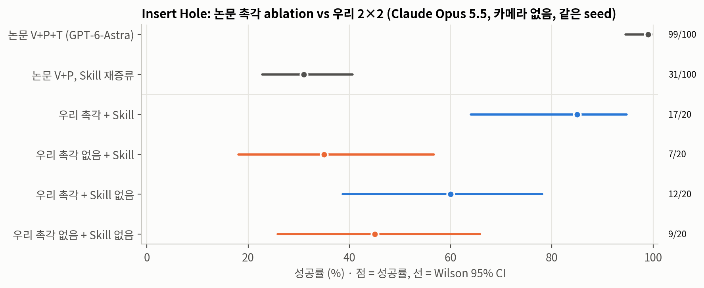
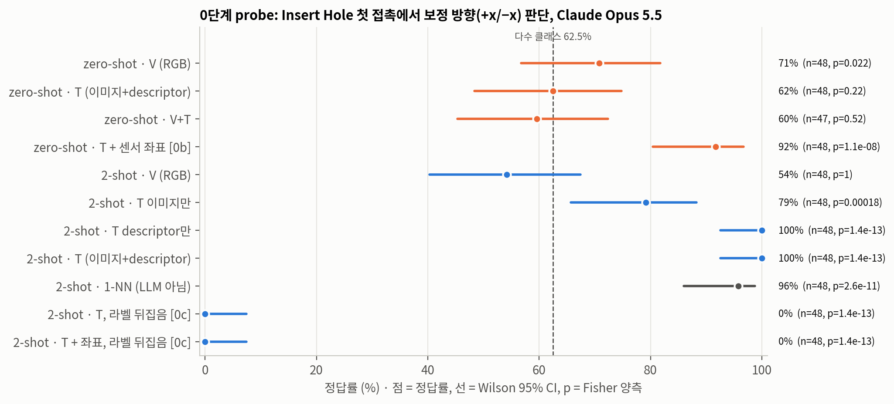
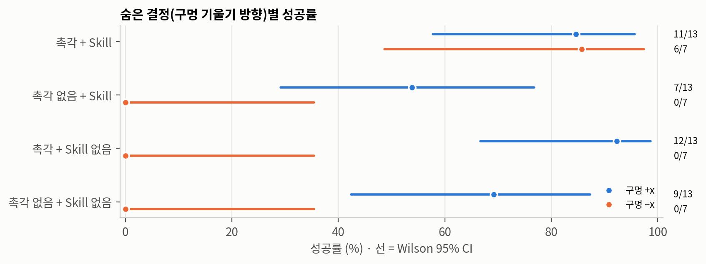
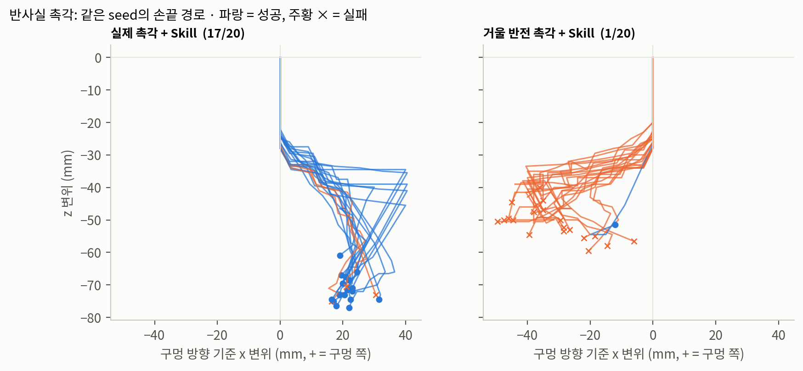

우리 실험: UniVTAC Insert Hole 폐루프 2×2(Task Skill × 촉각), 조건당 20 episode. code/results/univtac51_2x2/.
paper/paper.txt 전문과 paper/page-01.png, page-03.png, page-10.png, page-11.png 렌더 이미지를 직접 확인했습니다.[§3.2], [Tab.2], [Fig.2]처럼 표기합니다. 원문에 없는 내용을 추정한 경우에는 반드시 "추정"이라고 쓰고, 확인할 수 없는 사실은 "미확인"으로 표시합니다.이 논문은 "범용 멀티모달 모델이 물리 상호작용을 이해하고 그 이해를 행동 결정에 활용할 수 있는가"라는 질문을, contact-rich manipulation과 촉각 이해라는 구체적인 사례로 검증하려 합니다 [Abstract, §1]. 제안 시스템인 GPT-as-Tactile-Policy는 파라미터가 고정된 GPT-6-Astra를 단독 action policy로 사용하며, 다음 두 단계로 구성됩니다.
K_τ와 대표 촉각 reference 집합 E_τ^tac을 만듭니다 [§3.2, §4.1].저자가 내세우는 핵심 수치는 다음과 같습니다.
제목은 "Outperform VTLA Models"라고 주장하지만, 평균 기준으로는 N0-VTLA(96.2%)보다 낮습니다. 따라서 제목의 주장은 본문 결과보다 강하게 표현되어 있습니다(§4.2 참조).
이 논문은 같은 연구 계열의 선행 연구인 GPT-as-Policy("Systematically exploring the capabilities of GPT-6 Astra as embodied policies", Team et al., arXiv:2609.38537)의 direct-control 정식화를 그대로 계승합니다 [§2.1, §3.1]. 해당 정식화에서 GPT는 수치형 EEF/gripper 목표를 직접 생성하고, generic IK 제어기가 이를 관절 명령으로 바꾸며, 실행 후 새로운 관측이 다시 모델로 돌아갑니다. 이 논문의 기여는 그 루프에 (i) 양손가락 촉각 관측과 (ii) 데모로부터 증류한 고정 컨텍스트 C_τ를 추가한 것입니다. 액션 포맷, 프롬프트 구조, 출력 파싱 방식 등 세부 구현은 상위 논문에 있을 것으로 보이지만, 이 문서에서는 arXiv:2609.38537 본문을 확인하지 못했으므로 미확인입니다.
a_t ~ π_θ(· | ℓ, C_τ, o_t, H_t), o_t = (V_t, s_t, T_t) (1)
ℓ: 자연어 태스크 지시입니다.C_τ: 태스크 τ에 대해 고정된 컨텍스트(식 2)입니다. 평가 전에 고정되며 같은 태스크의 모든 테스트 에피소드에서 공유됩니다 [§4.1].o_t: V_t(scene RGB와 wrist RGB), s_t(proprioception), T_t(양손가락 촉각, 식 3)로 구성됩니다.H_t: 에피소드 내의 이전 관측, 액션, "execution feedback"입니다. 에피소드마다 독립된 모델 세션을 시작하므로 에피소드 사이에 history가 리셋됩니다 [§4.1].a_t: 목표 EEF pose, gripper position, 짧은 실행 horizon(1–5 control step)으로 이루어집니다 [§3.1, §3.4].θ: offline 요약과 online 실행 모두에서 고정됩니다.해설하면 식 (1)은 학습 대상 정책을 정의하는 식이 아니라, in-context conditioning 구조를 선언하는 식입니다. π_θ는 확률적 정책으로 표기되어 있지만, 샘플링 온도나 seed 같은 디코딩 설정은 보고되지 않았습니다(미확인). reasoning effort가 xhigh로 고정되었다는 사실만 명시되어 있습니다 [§4.1]. 결국 식 (1)이 의미하는 바는 "정책 개선이 파라미터 공간이 아니라 컨텍스트 공간(C_τ, H_t)에서 일어난다"는 것이며, 이것이 논문이 주장하는 "no parameter updates"의 실체입니다.
C_τ = { K_τ, E_τ^tac } (2)
K_τ(Task Skill)은 텍스트입니다. 원문에 따르면 Task Skill은 (a) task objectives, (b) manipulation principles, (c) stage transition의 근거(evidence), (d) 장애물 상황에서의 corrective strategies로 구성되며, "어떤 관측을 살펴보고 그것이 이후 행동에 어떻게 반영되어야 하는지"를 명시합니다 [§3.2]. 원문이 제시한 유일한 구체 예시는 "삽입 중 deformation은 증가하는데 물체가 전진하지 않으면 후퇴하여 접촉을 해소하고, 이어서 위치 또는 각도를 조정한 뒤 후속 피드백으로 그 효과를 평가한다"입니다 [§3.2].E_τ^tac은 데모에서 GPT-6-Astra가 직접 골라낸 대표 촉각 관측이며, "양손가락 접촉 분포와 국소 변형 패턴을 보존한다"고만 설명되어 있습니다 [§3.2, §4.1]. 몇 장을 고르는지, 어떤 기준으로 고르는지, 이미지 형태인지 descriptor 형태인지는 보고되지 않았습니다(미확인).해설하면 K_τ는 촉각 신호에 **조작적 의미(operational meaning)**를 부여하는 규칙집 역할을 하고, E_τ^tac은 그 규칙을 지각적으로 grounding하는 few-shot exemplar 역할을 합니다. 구조적으로 보면 이 설계는 REFLECT(Liu et al., arXiv:2306.15724)처럼 경험을 언어로 요약하는 접근과, VLM에 few-shot 시각 예시를 주는 in-context imitation을 결합한 형태입니다.
T_t = { I_t^f, D_t^f, M_t^f }_{f ∈ {L, R}} (3)
I_t^f: 손가락 f의 촉각 이미지입니다. [Fig.1A]와 [Fig.3]으로 보면 GelSight 계열의 마커 격자가 있는 RGB 이미지이며, 육안으로 대략 10×8 규모의 마커 격자가 보입니다(정확한 개수는 미확인).D_t^f: gel 압입(indentation) 맵을 공간적으로 pooling한 뒤 계산한 통계입니다. 원문에 명시된 항목은 mean indentation, peak indentation, contact region, centroid입니다 [§3.3].M_t^f: reference 위치 대비 마커의 2D 변위입니다 [§3.3]. [Fig.4]에서는 흰 배경 위의 quiver 형태로 시각화되어 있으며, [Fig.1A]에는 "Indentation" 히트맵과 "Marker motion" quiver가 별도의 패널로 그려져 있습니다. 따라서 모델이 마커 변위를 수치로 받는지, 렌더링된 quiver 이미지로 받는지, 혹은 둘 다 받는지는 확정할 수 없습니다(미확인이며, 리버스 엔지니어링 (d)에서 추정합니다).해설하면, 이미지(I)는 국소 디테일을 보존하고 descriptor(D, M)는 시점 간 정량 비교를 쉽게 만드는 이중 표현입니다. LLM은 이미지 두 장 사이의 미세한 차이를 수치적으로 비교하는 데 약하므로, 이 이중 표현은 합리적인 설계입니다. 다만 D는 시뮬레이터가 제공하는 정답 압입 깊이에 의존할 가능성이 높습니다. 실제 GelSight 센서에서는 photometric stereo 등으로 depth를 복원해야 하므로 sim-to-real 간극이 생깁니다(Limitations L5 참조).
또한 저자는 "연속된 관측 사이의 indentation 분포와 마커 변위를 같은 구간의 EEF/gripper 실측 이동량과 함께 비교한다"고 서술합니다 [§3.3]. 즉 모델 입력에는 액션 전후의 차분 정보가 포함되어야 합니다. 이 차분을 시스템이 미리 계산해서 주는지, 모델이 history에서 직접 비교하는지는 미확인입니다.
UniVTAC expert demos (태스크당 50개)
├─ 40개: knowledge construction
│ └─ GPT-6-Astra(θ 고정)가 "액션 전후의 접촉 변화 + 물체 이동 + 태스크 진행"을 함께 분석
│ ├─ K_τ : Task Skill 텍스트 (objectives / principles / stage evidence / corrective strategies)
│ └─ E_τ^tac : 대표 촉각 reference
└─ 10개: "offline validation" (용도는 서술되지 않음)
→ C_τ = {K_τ, E_τ^tac} 를 평가 전에 고정하고, 해당 태스크의 100개 테스트 에피소드 전체에서 재사용
근거는 [§3.2]와 [§4.1]입니다. 40개 데모 전체를 한 번의 컨텍스트에 넣었는지, 데모별로 분석한 뒤 집계(map-reduce)했는지, 사람이 결과를 검수하거나 수정했는지는 보고되지 않았습니다(미확인). 10개 validation 데모가 Task Skill을 반복적으로 수정하는 데 쓰였다면, 이는 사실상 사람이 수행하는 prompt optimization에 해당합니다(L1 참조).
for t = 0, 1, ...:
o_t ← (scene RGB, wrist RGB, s_t, {I, D, M}_{L,R})
a_t ← GPT-6-Astra(xhigh)(ℓ, C_τ, o_t, H_t) # 목표 EEF pose, gripper, horizon h ∈ {1..5}
bound/format 검사 → 통과하면 IK 제어기가 h control step 동안 실행
o_{t+1} 획득, H_{t+1} ← H_t ∪ {o_t, a_t, feedback}
(다음 호출에서) o_t와 o_{t+1}을 비교하여 진행 여부 판단 → 전진 / probing / 교정 선택
종료: 환경의 native success 조건을 만족하거나, 실행 예산을 소진하면 종료합니다(후자는 실패로 처리).
근거는 [§3.4]와 [§4.1]입니다. 원문은 액션을 "최신 측정 로봇 상태로부터 구성한다"고 서술합니다 [§3.4]. 이는 모델이 현재 실측 pose를 기준으로 목표를 계산한다는 뜻이며, 액션이 절대 목표 pose이더라도 그 값이 사실상 "현재 pose + 증분"으로 만들어진다는 점을 시사합니다. 불확실한 상황에서는 작은 병진, 자세 조정, gripper 개도 변경 같은 탐색 액션을 수행하고, 그 결과가 H_t에 누적됩니다 [§3.4]. [Fig.4]는 같은 에피소드 안에서 near-vertical(step 30→35→40), leftward(119→124→127), rightward(191→194→199) 방향의 probing을 차례로 시도하는 모습을 보여줍니다.
| Fig.1A 구성요소 | 식/기호 | 원문 근거 | 구현상 대응 (추정 포함) |
|---|---|---|---|
| Scene RGB, Wrist RGB | V_t |
§3.1 | 시뮬레이터 카메라 2대의 프레임 |
| L/R touch | I_t^{L,R} |
§3.3 | 마커가 있는 GelSight형 촉각 이미지 |
| Indentation | D_t^f |
§3.3 | 압입 맵을 pooling한 통계 (텍스트/JSON, 추정) |
| Marker motion | M_t^f |
§3.3 | 마커 변위 벡터장 (수치 및/또는 quiver 이미지, 추정) |
Expert demos D_expert → Offline analysis |
— | §3.2 | GPT-6-Astra 분석 호출 (오프라인 배치) |
Frozen context: Knowledge K_τ, Touch refs E_τ |
C_τ (식 2) |
§3.2 | 시스템 프롬프트 + reference 이미지 블록 (추정) |
Instruction ℓ |
ℓ |
§3.1 | 태스크 지시 문자열 |
Observation o_t (Vision, touch, state) |
o_t |
§3.1 | 스텝별 user 메시지 (추정) |
History H_t |
H_t |
§3.1, §4.1 | 에피소드 단위 세션의 대화 맥락 (추정) |
GPT-6-Astra Policy π_θ |
π_θ |
§3.1, §4.1 | reasoning effort xhigh |
Action a_t: EEF pose, Gripper, Steps |
a_t |
§3.1, §3.4 | 구조화된 출력 (JSON, 추정) |
| IK + execute | — | §3.4 | bound/format 검사 → generic IK → h step 실행 |
New input o_{t+1}, H_{t+1} |
— | §3.4 | 다음 호출의 입력 |
| 항목 | 내용 | 근거 |
|---|---|---|
| 벤치마크 | UniVTAC (Chen et al., arXiv:2602.10093): 시뮬레이션 전용 | §4.1 |
| 태스크 | Insert Hole, Lift Can, Grasp Classify, Lift Bottle, Pull-out Key | §4.1 |
| 데모 | 태스크당 50개 = 40개(knowledge construction) + 10개(offline validation) | §4.1 |
| 정책 | GPT-6-Astra, reasoning effort xhigh, 모든 태스크에서 동일 설정 | §4.1 |
| 세션 | 에피소드마다 독립 세션, history는 에피소드 내에서만 유지 | §4.1 |
| 평가 | 태스크당 고정 테스트 에피소드 100개, 총 500개. 환경의 native success 기준 사용. 태스크 단순 평균 | §4.1 |
| 실행 예산 | 수치는 보고되지 않음. [Fig.2]의 w/o tactile 실패 에피소드가 step 300에서 끝나므로 Insert Hole의 상한은 300 control step으로 추정 | Fig.2 (추정) |
| Method | Specialized pretraining | Per-task training | Knowledge-guided probing |
|---|---|---|---|
| ACT + UniVTAC | Tactile encoder | 50 demos; 4,000 steps | × |
| N0-VTLA | Multi-node cluster | One policy per task | × |
| N0-TWAM | 128×H800; 8×A100 | One policy/task; 1k steps | × |
| Ours | No additional pretraining | No parameter updates | ✓ |
이 표는 학습 비용만 비교하고 추론 비용(호출 수, 토큰, 지연시간)은 다루지 않습니다. 또한 GPT-6-Astra 자체의 사전학습 비용과 학습 데이터 구성도 공개되지 않았으므로 "No additional pretraining"이라는 비교 기준은 비대칭입니다(L2 참조).
| Method | Insert Hole | Lift Can | Grasp Classify | Lift Bottle | Pull-out Key | Mean |
|---|---|---|---|---|---|---|
| ACT + UniVTAC Encoder | 24.0 | 29.0 | 99.0 | 71.0 | 46.0 | 53.8 |
| π0.5 | 25.0 | 6.0 | 49.0 | 100.0 | 35.0 | 43.0 |
| N0-VTLA | 95.0 | 88.0 | 100.0 | 99.0 | 99.0 | 96.2 |
| N0-TWAM | 99.0 | 93.0 | 94.0 | 58.0 | 79.0 | 84.6 |
| Ours | 99.0 | 95.0 | 98.0 | 93.0 | 84.0 | 93.8 |
[Fig.1C]의 막대그래프 수치는 [Tab.2]와 일치합니다(page-01.png에서 직접 대조했습니다).
아래 통계는 이 문서에서 직접 계산한 것입니다. 각 셀을 n=100 Bernoulli 시행으로 가정했고, baseline도 n=100이라고 가정했습니다. baseline의 실제 시행 수와 seed 구성은 미확인입니다.
| 비교 | 차이 | 검정 결과 (two-proportion z, 양측) | 해석 |
|---|---|---|---|
| Insert Hole: Ours 99 vs N0-VTLA 95 | +4pp | z=1.66, p≈0.10 | 유의하지 않음 |
| Lift Can: Ours 95 vs N0-VTLA 88 | +7pp | z=1.77, p≈0.08 | 유의하지 않음 |
| Lift Can: Ours 95 vs N0-TWAM 93 | +2pp | z=0.60, p≈0.55 | 유의하지 않음 |
| Grasp Classify: Ours 98 vs N0-VTLA 100 | −2pp | p≈0.16 | 유의하지 않음 |
| Lift Bottle: Ours 93 vs N0-VTLA 99 | −6pp | z=−2.17, p≈0.03 | 유의하게 열세 |
| Pull-out Key: Ours 84 vs N0-VTLA 99 | −15pp | z=−3.80, p<0.001 | 유의하게 열세 |
| Mean: Ours 93.8 vs N0-VTLA 96.2 | −2.4pp | SE≈1.34pp, z≈−1.79, p≈0.07 | 경계선, 수치상 열세 |
| Insert Hole 촉각 ablation: 99 vs 31 | +68pp | Wilson 95% CI: [94.6, 99.8] vs [22.8, 40.6] | 매우 유의함 |
Wilson 95% 신뢰구간(Ours 기준)은 Insert Hole [94.6, 99.8], Lift Can [88.8, 97.8], Grasp Classify [93.0, 99.4], Lift Bottle [86.3, 96.6], Pull-out Key [75.6, 89.9]입니다.
해석하면, 저자가 "우위"로 제시한 항목(Insert Hole에서 N0-VTLA보다 높음, Lift Can 최고치)은 모두 통계적으로 유의하지 않습니다. 반면 열세인 항목(Pull-out Key, Lift Bottle에서 N0-VTLA보다 낮음)은 유의합니다. 따라서 "comparable to SOTA"라는 본문 표현은 대체로 방어할 수 있지만, 제목의 "Outperform VTLA Models"는 데이터가 지지하지 않습니다. 반면 "N0-TWAM과 모든 태스크에서 동등하거나 그 이상"이라는 주장 [§4.2]은 수치상 사실이며, 특히 Lift Bottle(93 vs 58)에서 차이가 큽니다.
| 조건 | Online 관측 | 성공률 |
|---|---|---|
| Ours | V+P+T | 99.0 |
| w/o tactile | V+P | 31.0 |
| Baseline | 정체 | 출처 | 비고 |
|---|---|---|---|
| ACT + UniVTAC Encoder | ACT(Action Chunking Transformer) 정책에 UniVTAC의 사전학습 visuo-tactile 인코더를 결합한 정책입니다. 태스크당 50 demo, 4,000 step으로 학습합니다 [Tab.1]. | Chen et al., UniVTAC, arXiv:2602.10093 | ACT 원 논문(Zhao et al., "Learning Fine-Grained Bimanual Manipulation with Low-Cost Hardware", RSS 2023, arXiv:2304.13705)은 이 논문의 참고문헌에 없습니다. |
| π0.5 | Physical Intelligence의 VLA입니다. 이 논문에서는 vision-only baseline으로 사용됩니다. | Intelligence et al., arXiv:2504.16054 | UniVTAC 태스크에 어떻게 fine-tuning했는지는 미확인입니다. |
| E0 | Tweedie discrete diffusion 기반의 이산 액션 VLA입니다. 원문에서 vision-only baseline으로 언급됩니다 [§4.1]. | Zhan et al., NeurIPS 2026 | [Tab.2]와 [Fig.1C]에 결과가 없습니다. 본문 언급과 결과 표가 서로 불일치합니다. 또한 E0의 저자 중 L. Lin과 G. Wang은 이 논문의 저자이기도 합니다. |
| N0-VTLA | latent tactile token을 예측하는 경로를 가진 대규모 visuo-tactile 사전학습 VTLA이며, 저장된 배포 데이터로 offline policy improvement를 수행합니다 [§2.2]. | Team et al., arXiv:2607.23782 | 태스크별로 정책을 하나씩 학습합니다 [Tab.1]. |
| N0-TWAM | 미래의 vision, touch, action을 함께 예측하는 tactile-native world-action model입니다. 통합된 force 기반 촉각 표현과 contact-event 기반 태스크 staging을 사용합니다 [§2.2]. | Team et al., arXiv:2607.23783 | 사전학습에 128×H800과 8×A100을 사용했고, 태스크별로 1k step을 학습합니다 [Tab.1]. |
원문은 "previously evaluated on UniVTAC"인 baseline 4개와 비교한다고 쓰면서 실제로는 5개(E0, π0.5, ACT+UniVTAC, N0-VTLA, N0-TWAM)를 나열합니다 [§4.1]. baseline 수치를 저자가 직접 재실행했는지, 기존 논문에서 가져왔는지도 명시되어 있지 않습니다. "previously evaluated"라는 표현으로 보아 기존 보고치를 인용했을 가능성이 높으며(확실도: 중간), 그렇다면 테스트 seed, 에피소드 예산, 성공 판정이 완전히 같다는 보장이 없습니다.
저자는 별도의 Limitations 절을 두지 않았습니다. 아래는 원문에 근거한 비판이며, 각 항목에 근거 위치를 붙였습니다.
| # | 한계 | 근거 위치 | 영향 |
|---|---|---|---|
| L1 | "Training-free" 표기와 실제 데이터 사용의 괴리. [Fig.1C] 범례는 "Ours (Training-free)"라고 표기하지만, 태스크당 40개 데모를 in-context로 증류하고 10개를 "offline validation"에 사용합니다. validation이 Task Skill을 반복 수정하는 데 쓰였다면, 이는 사람 또는 모델이 수행하는 prompt-level optimization입니다. 데이터 사용량(50 demo)은 ACT+UniVTAC(50 demo)와 같은 수준입니다. | Fig.1C, §4.1, Tab.1 | 주장 과장. "parameter-free adaptation"이 더 정확한 표현입니다. |
| L2 | 비대칭적인 비용 비교. [Tab.1]은 baseline의 사전학습 비용(128×H800 등)을 나열하지만, GPT-6-Astra의 사전학습 비용과 데이터(로보틱스나 촉각 데이터 포함 여부)는 공개되지 않았습니다. "No additional robotics-specific pretraining"은 검증할 수 없는 주장입니다. UniVTAC 유사 데이터가 사전학습에 섞였을 가능성(contamination)도 배제할 수 없습니다(미확인). | Tab.1, Abstract | 비교의 공정성 |
| L3 | 추론 비용과 지연시간을 보고하지 않음. reasoning effort가 xhigh이고, 1–5 step마다 한 번씩 호출하며, 에피소드는 약 191–300 step입니다. 에피소드당 수십에서 백 회 이상의 호출이 필요할 것으로 추정되지만(리버스 엔지니어링 (g) 참조), 토큰 수, API 비용, 호출당 지연, 에피소드 wall-clock 시간이 모두 빠져 있습니다. | §4.1, §3.4, Fig.2 | 실시간 제어 가능성과 실용성을 평가할 수 없습니다. |
| L4 | 시뮬레이션 전용 평가. 5개 태스크 모두 UniVTAC 시뮬레이션에서만 평가했습니다. 시뮬레이션은 LLM 호출 동안 시간을 멈출 수 있지만, 실제 로봇에서는 수십 초 단위의 지연 동안 접촉 상태가 유지된다는 보장이 없습니다. | §4.1 | 실세계 일반화 미검증 |
| L5 | 촉각 descriptor가 시뮬레이터의 특권 정보에 의존할 가능성. D_t는 "gel indentation map"에서 계산합니다. 시뮬레이터에서는 정답 depth를 쉽게 얻지만, 실제 GelSight에서는 photometric stereo로 복원해야 하며 노이즈가 큽니다. 마커 변위 역시 실제 센서에서는 마커 추적 오차가 생깁니다. |
§3.3 | sim-to-real 간극 |
| L6 | 단일 run이며 신뢰구간이 없음. 각 설정을 100 에피소드로 한 번만 실행했고, CI, seed 분산, 반복 실행 결과가 없습니다. 3.3절의 계산에 따르면 저자가 강조한 우위는 유의하지 않고, 열세(Pull-out Key, Lift Bottle)는 유의합니다. closed model은 같은 입력에도 출력이 달라질 수 있어 run 간 분산을 보고하는 것이 특히 중요합니다. | Tab.2, Tab.3, §4.1 | 결론의 통계적 강도 부족 |
| L7 | 촉각 ablation의 confound. w/o tactile 조건은 촉각 관측만 제거한 것이 아니라 Task Skill 자체를 촉각 없이 다시 증류했습니다("fixed Task Skill matched to its available observations"). 따라서 99→31의 차이에는 (i) online 촉각 관측의 효과, (ii) offline 증류 단계에서 촉각을 본 효과, (iii) 촉각 reference의 효과가 섞여 있습니다. 이를 분리하려면 2×2(또는 2×2×2) 설계가 필요합니다. 예를 들어 촉각 기반 Task Skill을 유지한 채 online 촉각만 제거하는 조건이 필요합니다. | §4.3 | 인과 귀속 불가 |
| L8 | 구성요소 ablation 부재. Task Skill 유무(zero-shot), 촉각 reference 유무, descriptor(D,M)와 이미지(I)의 상대 기여, history 길이와 truncation, horizon 상한(1–5) 고정 대비 가변, reasoning effort(xhigh 대비 low/medium), 데모 수(40 대비 5/10/20)에 대한 ablation이 하나도 없습니다. 특히 "모델이 촉각을 이해한다"는 제목의 주장을 검증하려면 Task Skill 없는 조건이 핵심인데 이 조건이 빠져 있습니다. |
§4.3 (ablation 1종) | 메커니즘 주장 근거 부족 |
| L9 | ablation이 Insert Hole 하나뿐임. 나머지 4개 태스크에서 촉각의 기여는 측정되지 않았습니다. Grasp Classify는 "tactile classification"을 포함한다고 설명되지만 [§4.1] 촉각 제거 결과가 없습니다. | §4.1, §4.3 | 일반화 불가 |
| L10 | closed model 재현성. GPT-6-Astra의 버전이나 스냅샷, 날짜, 디코딩 설정(temperature 등), 프롬프트 원문, Task Skill 원문, reference 선택 결과가 공개되지 않았습니다(프로젝트 페이지 내용은 미확인). 모델이 업데이트되면 결과를 재현할 수 없습니다. | §4.1 | 재현성 |
| L11 | "이해(understands)"라는 주장의 범위. 관찰된 행동([Fig.4]: 변위가 크면 후퇴하고 작으면 전진)은 [§3.2]에 명시된 Task Skill 규칙과 동형입니다. 규칙 추종과 물리 이해를 구분하는 실험(규칙에 없는 새로운 접촉 상황, 반사실적 촉각 입력, Task Skill 없는 조건)이 없습니다. | Title, §3.2, §4.4 | 제목 과장 |
| L12 | 실패 분석 부재. Pull-out Key(84%)와 Lift Bottle(93%)에서 N0-VTLA보다 유의하게 낮은 원인(지연, horizon 제약, 동적 동작, 파싱 실패 등)을 분석하지 않았습니다. 형식 오류나 bound 위반 시 재시도 정책도 서술되지 않았습니다 [§3.4]. | Tab.2, §3.4 | 약점 파악 불가 |
| L13 | baseline 프로토콜의 불확실성. baseline 수치의 출처(재실행인지 인용인지)와 seed 일치 여부가 명시되지 않았습니다. E0는 baseline으로 언급되었지만 결과가 없으며, "4개 baseline"이라고 쓰고 5개를 나열합니다. | §4.1, Tab.2 | 비교 신뢰도 |
| L14 | 데이터 누설 가능성. 50개 expert 데모의 초기 설정과 100개 테스트 seed가 분리되어 있는지 명시되지 않았습니다. 촉각 reference가 테스트와 같은 초기 조건에서 나왔다면 사실상 테스트 정보를 참조하는 셈이 됩니다(미확인). | §4.1 | 일반화 과대평가 가능성 |
| L15 | 명칭과 서술의 비일관성. GPT-as-Tactile-Policy와 GPT-as-Policy를 혼용합니다([§4.2], [Fig.2] 캡션). 제목의 문법("Outperform")도 어색합니다. 결과에는 영향이 없지만 원고 완성도가 낮다는 신호입니다. | Title, §4.2, Fig.2 | 경미 |
| L16 | 안전과 힘 제어 부재. 위치 목표만 출력하며 힘이나 임피던스 제어, 접촉력 상한을 서술하지 않습니다. 시뮬레이션에서는 과도한 압입이 문제가 되지 않지만, 실제 환경에서는 센서나 물체 손상 위험이 있습니다. Tactile-VLA(Huang et al., arXiv:2507.09160)의 hybrid position-force control과 대조됩니다. | §3.1, §3.4 | 실세계 적용성 |
각 항목에 **확실도(높음/중간/낮음)**와 근거를 붙였습니다. "높음"은 원문에 직접 근거가 있는 경우, "중간"은 원문의 복수 단서에서 강하게 추론되는 경우, "낮음"은 합리적인 설계 추정에 불과한 경우를 뜻합니다. 아래의 프롬프트와 스키마는 재구현을 위한 초안이며, 저자의 실제 프롬프트가 아닙니다.
출력 구조 (확실도: 높음, 4개 상위 필드) 근거: [§3.2]가 objectives, principles, stage-transition evidence, corrective strategies를 명시합니다.
하위 필드와 생성 절차 (확실도: 낮음–중간) 근거: 40개 데모를 각각 수백 step 길이로 통째로 넣기는 컨텍스트 한계상 어렵습니다. 그래서 (1) 데모별로 키프레임을 subsampling하고 분석한 뒤 (2) 집계하는 2단계 map-reduce 방식이 현실적입니다. 키프레임 선택은 촉각 이벤트(접촉 시작, 압입 급증, 미끄러짐)를 기준으로 했을 가능성이 높습니다.
# K_τ 출력 스키마 초안 (YAML)
task: insert_hole
objectives:
- "튜브를 블록의 기울어진 구멍에 끝까지 삽입한다"
stages: # stage-transition evidence
- name: approach
exit_evidence: ["양손가락 indentation 변화 없음", "튜브 끝이 구멍 입구 위에 위치(scene RGB)"]
- name: contact
exit_evidence: ["하강 중 peak indentation 증가", "마커 변위가 축방향 shear로 나타남"]
- name: align
exit_evidence: ["전진 시 마커 변위 증가폭이 작음", "튜브가 실제로 하강(wrist RGB/EEF z)"]
- name: insert
exit_evidence: ["EEF가 목표 깊이에 도달", "변위 안정"]
principles:
- "한 번에 하나의 자유도만 조정하고, 다음 관측으로 효과를 평가한다"
- "좌우 indentation 비대칭은 튜브의 기울어짐/미끄러짐 신호로 해석한다"
corrective_strategies:
- trigger: "deformation 증가 + EEF/물체 전진 없음"
action: "2–5mm 후퇴 → 측면 1–3mm 또는 축 3–5° 조정 → 재전진"
evaluate: "재전진 시 마커 변위 크기 비교"
- trigger: "좌우 centroid가 반대 방향으로 이동"
action: "gripper 재파지 또는 roll 보정"
action_guidelines:
step_size: {pos_mm: [1, 5], rot_deg: [2, 5]}
horizon: "접촉 중 1–2, 자유공간 3–5"
# 오프라인 Stage 1 (데모 단위 분석) 프롬프트 초안
[SYSTEM] 너는 로봇 조작 전문가다. 아래 expert demonstration의 키프레임을 시간순으로 분석하라.
각 키프레임에는 scene/wrist RGB, 좌/우 촉각 이미지, indentation 통계(mean/peak/area/centroid),
marker displacement 요약, EEF pose, gripper 값, expert action이 포함된다.
[USER] 태스크: {instruction}
데모 #{k} 키프레임 {N}개: {frames...}
다음을 JSON으로 답하라:
1) 단계 분할과 각 단계 전이 시점의 관측 증거
2) 접촉 변화(좌우 비대칭, 변위 방향)와 직전 expert action의 관계
3) 막힘(obstruction)이 발생한 구간과 expert의 교정 방식, 그 효과
4) 이 데모에서 대표성이 높은 촉각 프레임 후보(인덱스와 이유)
# 오프라인 Stage 2 (집계) 프롬프트 초안
[USER] 아래는 데모 40개의 분석 결과다. 공통 패턴을 추출하여 Task Skill을
{objectives, stages(exit_evidence), principles, corrective_strategies}로 작성하라.
규칙은 관측 가능한 신호(촉각 통계·마커 변위·EEF 이동·물체 이동)에 근거해야 하며,
수치 임계값은 데모에서 관찰된 범위로 제시하라. 또한 대표 촉각 reference를 단계별로 선택하라.
구조 (확실도: 중간)
근거: 고정 컨텍스트(ℓ, C_τ)와 가변 입력(o_t, H_t)이 분리되어 있고 [§3.1, §3.2], 에피소드 단위 "session"이 존재합니다 [§4.1]. 고정 부분을 system 또는 첫 메시지에 두고 스텝마다 user 메시지를 추가하는 구조가 가장 자연스럽고, prompt caching에도 유리합니다.
[SYSTEM]
너는 7-DoF 로봇팔과 평행 그리퍼(양 손가락에 GelSight형 촉각 센서)를 제어하는 정책이다.
태스크: {ℓ}
== Task Skill ==
{K_τ}
== Tactile references ==
{E_τ^tac: 단계 라벨 + 좌/우 촉각 이미지 + 해당 descriptor}
== 관측 정의 ==
- indentation: mean/peak (mm), contact_area (px 비율), centroid (u,v ∈ [0,1])
- marker: mean_disp (px), max_disp, dominant_dir (deg), [선택] divergence, curl
== 행동 규칙 ==
- 매 스텝 직전 액션의 효과를 먼저 평가하라(EEF 이동, 물체 반응, 촉각 변화).
- 방향이 불확실하면 작은 탐색 액션(평행이동/회전/그리퍼 개도)을 선택하라.
- 출력은 지정된 JSON 스키마만 사용하라. 이동량 한계: |Δp| ≤ 10mm, |Δθ| ≤ 10°/step.
[USER @ step t]
step: {t} / budget: {T_max}
proprio: eef_pos={x,y,z} eef_quat={qx,qy,qz,qw} gripper={g}
Δ since last action: eef_Δp={...} eef_Δrot={...} gripper_Δ={...}
tactile L: indentation={...} marker={...} Δ vs prev: {...}
tactile R: indentation={...} marker={...} Δ vs prev: {...}
images: [scene_rgb] [wrist_rgb] [tactile_L] [tactile_R] ([marker_quiver_L] [marker_quiver_R])
last_action: {a_{t-1}} exec_feedback: {ok | clipped | ik_fail | format_error}
→ 다음 액션을 JSON으로 출력하라.
done, stage, rationale 필드: 확실도 낮음. 종료는 환경의 native success 조건이 판정하므로 [§4.1] done 필드는 필수가 아닙니다. 다만 stage 라벨은 Task Skill의 stage-transition evidence와 맞물리므로 포함했을 가능성이 있습니다.{
"stage": "align",
"assessment": "전진 시 좌측 marker 변위 증가, EEF z 정체 → 막힘",
"eef_target": {
"frame": "base",
"position_m": [0.512, -0.034, 0.181],
"rpy_deg": [178.0, 4.5, 90.0]
},
"gripper": 0.012,
"horizon": 2
}
검증 로직(확실도: 높음, "checks on command bounds and format" [§3.4])의 내용은 다음과 같습니다. JSON 파싱, 필드 타입 확인, workspace 범위 clip, step당 최대 이동량 제한, horizon ∈ {1..5}, gripper ∈ [0, g_max]. 위반 시 재요청할지 clip할지는 미확인입니다.
| 항목 | 계산 후보 | 확실도 | 근거 |
|---|---|---|---|
| mean indentation | contact mask 내부 depth 평균 (또는 전체 평균) | 높음(항목 존재) / 낮음(정의) | §3.3 |
| peak indentation | depth 최댓값 또는 상위 1% 분위수 | 높음 / 중간 | §3.3 |
| contact region | depth > δ(예: 0.05mm) 픽셀 비율, 연결 성분 수, bbox |
높음 / 낮음 | §3.3 "contact regions" |
| centroid | depth 가중 무게중심 (u, v), 정규화 좌표 | 높음 / 중간 | §3.3 |
| spatial pooling | depth 맵을 3×3 또는 4×4 격자로 평균 pooling한 표 | 중간 / 낮음(격자 크기) | §3.3 "spatially pool" |
| 접촉 패치 형상 | 2차 모멘트로 계산한 주축 방향과 이심률 (튜브/키의 기울기 단서) | 낮음 | 원문에 없음. 설계 제안 |
| marker 평균/최대 변위 | 마커별 ‖d_i‖의 평균과 최대, 평균 벡터 방향 | 중간 | §3.3, Fig.4 (변위 크기로 판단) |
| marker divergence/curl | 격자 보간 후 ∇·d (법선 압력), ∇×d (비틀림 토크) | 낮음 | 원문에 없음. 설계 제안 |
| L/R 차분 | ΔL−R의 peak, centroid 차이, 변위 방향 차이 | 중간 | §3.3 "bilateral contact differences" |
| 시간 차분 | t−1 대비 위 통계의 변화량 | 중간 | §3.3 "across successive observations" |
| marker quiver 이미지 | 변위를 확대한 화살표 플롯을 이미지로 제공 | 중간 | Fig.1A, Fig.4의 시각화 형식 |
| 후보 | 설명 | 확실도 | 근거 |
|---|---|---|---|
| E1. GPT 직접 선택 | Stage 1 분석에서 모델이 "대표 프레임"을 지목하고, Stage 2에서 단계별로 정리합니다. | 중간–높음 | §3.2 "GPT-6-Astra also extracts representative tactile observations" |
| E2. 단계 정렬 exemplar | stage(무접촉/첫 접촉/막힘/정렬 후 미끄러짐/완료)마다 1–2쌍(L/R)을 선택하고 단계 라벨을 붙입니다. | 중간 | Task Skill의 stage-transition evidence와 짝을 이루어야 grounding이 가능합니다 [§3.2]. |
| E3. 규칙 기반 사전 필터 + GPT 선택 | indentation 급변 시점(contact event)을 자동 검출해 후보를 줄인 뒤 GPT가 최종 선택합니다. | 낮음 | 원문에 없음. 컨텍스트 비용 관점의 추정 |
| E4. descriptor 군집화 | 40개 데모의 촉각 descriptor를 k-medoids로 군집화하고 medoid를 reference로 사용합니다. | 낮음 | "preserving bilateral contact distributions"를 충실히 구현하는 방식 |
| reference 개수 | 태스크당 4–12개(L/R 쌍 2–6개) | 낮음 | 컨텍스트 예산 추정 |
| 항목 | 추정 | 확실도 | 근거 |
|---|---|---|---|
| 범위 | 에피소드 내부에서만 유지하고 에피소드 사이에서는 리셋합니다. | 높음 | §4.1 |
| 구현 형태 | 대화 세션(multi-turn)에 스텝 메시지를 누적합니다. | 중간 | §4.1 "independent model session" |
| 내용 | 이전 관측, 액션, execution feedback(bound/IK 결과)을 담습니다. | 높음 | §3.1 |
| 이미지 보존 | 최근 K(2–5) 스텝만 이미지를 유지하고, 그 이전은 텍스트 descriptor와 액션 로그로 압축합니다. | 낮음–중간 | 191 step / h≈3이면 약 64회 호출이 필요하고, 호출당 이미지 4–6장이 전부 누적되면 이미지가 300장을 넘어 컨텍스트 비용이 2차적으로 증가합니다. 원문은 truncation을 언급하지 않습니다. |
| 탐색 기억 | 시도한 방향과 결과 요약(예: "near-vertical: 막힘, leftward: 막힘")을 유지합니다. | 중간 | Fig.4에서 같은 방향을 반복하지 않고 다른 방향을 순차적으로 시도합니다. §4.4 "responses retained in H_t" |
| reasoning 토큰 | 이전 턴의 reasoning은 history에 포함되지 않습니다(일반적인 API 동작 가정). | 낮음 | 미확인 |
에피소드 길이 단서 (확실도: 중간)
호출 수 추정 (확실도: 낮음–중간)
N_calls/episode ≈ L / h̄이고 h̄ ∈ [2, 4]로 가정합니다.
| 시나리오 | L (control step) | h̄=2 | h̄=3 | h̄=4 |
|---|---|---|---|---|
| Insert Hole 성공 (Fig.2) | 191 | 96 | 64 | 48 |
| 예산 소진 실패 | 300 | 150 | 100 | 75 |
| 다른 태스크 (길이 미보고, 150–250 가정) | 200 | 100 | 67 | 50 |
호출당 토큰 추정 (확실도: 낮음) GPT-6-Astra의 이미지 토큰화 방식과 가격은 미확인입니다. 아래는 매개변수화한 추정입니다.
| 구성 | 추정 토큰 |
|---|---|
| 고정 prefix (system + K_τ 2–6k + reference 이미지 4–12장) | 5k–15k (cache 가능) |
| 현재 관측 (이미지 4–6장 + descriptor/proprio 텍스트) | 2k–6k |
| history (최근 K스텝 이미지 + 압축 텍스트 로그) | 3k–20k (스텝에 따라 증가) |
| 입력 합계 | 10k–40k |
| 출력 (xhigh reasoning + action JSON) | 2k–20k (reasoning 토큰 양은 미확인) |
비용 공식
Cost ≈ N_calls × ( T_in,uncached·p_in + T_in,cached·p_cache + T_out·p_out )
예시로 가상 단가 p_in=$5/M, p_cache=$0.5/M, p_out=$30/M(실제 GPT-6-Astra 가격 아님, 미확인)를 적용하고, 호출당 입력 20k(그중 15k cached), 출력 10k를 가정하면 다음과 같습니다.
지연 (확실도: 낮음) xhigh reasoning의 호출당 지연을 10–90초로 가정하면, 에피소드당 50–100회 호출에 약 8분–2.5시간이 걸립니다. 600 에피소드를 순차 실행하면 수백에서 천 시간 이상이 필요하므로 대규모 병렬화가 필수였을 것입니다. 이 지연 수준에서는 실제 로봇의 폐루프 제어가 사실상 불가능하므로, L3과 L4를 정량적으로 뒷받침합니다.
이 환경에는 torch와 LLM SDK가 없고 GPT-6-Astra에 접근할 수 없습니다. 따라서 재구현은 (1) 정책 인터페이스(ℓ, C_τ, o_t, H_t → a_t)를 추상화하고, (2) mock/규칙 기반 정책으로 루프, descriptor, 스키마, 검증기를 먼저 검증한 뒤, (3) 실제 VLM 백엔드(사용 가능한 closed/open 모델)를 교체해 넣는 순서가 현실적입니다. 아래 ablation을 기본 실험 계획에 포함할 것을 권장합니다. 대상은 L7과 L8에서 지적한 2×2 촉각 ablation(offline 증류 시 촉각 사용 여부 × online 촉각 사용 여부), Task Skill 제거, reference 제거, history 길이, horizon 상한, reasoning effort입니다.
이 문서는 통합 리포트 report/report.html의 §9(0단계 probe)와 §10(폐루프 2×2, 반사실 촉각)을 따로 정리한 것입니다. 원문 결과 파일은 code/results/stage0/, code/results/univtac51_2x2/, code/results/univtac51_cf/에 있습니다.
이 실험이 원문 재현은 아닙니다. GPT-6-Astra를 쓸 수 없어서 Claude Opus 5.5(effort xhigh)를 같은 자리에 넣었습니다. 목표는 원문 수치를 다시 내는 것이 아니라, 원문 주장 "Understands touch"의 메커니즘을 떼어 보는 것입니다. 원문 Tab.3의 촉각 ablation은 촉각 관측, 촉각 reference, Task Skill(재증류)이 한꺼번에 바뀐 비교라서(05_claim_verification.md §3.4), 세 요인을 분리하도록 실험을 설계했습니다. §2와 §3의 2×2와 거울 반전은 원문에 없는 실험입니다.
byml/UniVTAC, isaac45/insert_hole, 에피소드 0–49).| reference | 조건 | n | 정답률 [95% CI] | bal. acc | +x 예측 비율 | Fisher p | 평균 지연 s | 출력 토큰 |
|---|---|---|---|---|---|---|---|---|
| 0 | V | 48 | 0.71 [0.57, 0.82] | 0.62 | 0.88 | 0.022 | 44.3 | 3,754 |
| 0 | T | 48 | 0.62 [0.48, 0.75] | 0.60 | 0.62 | 0.22 | 70.4 | 6,422 |
| 0 | VT | 47 | 0.60 [0.45, 0.72] | 0.56 | 0.68 | 0.52 | 93.8 | 8,400 |
| 0 | T + 센서 좌표 (0b) | 48 | 0.92 [0.80, 0.97] | 0.90 | 0.67 | 1.1×10⁻⁸ | 37.4 | 2,781 |
| 2 | V | 48 | 0.54 [0.40, 0.67] | 0.49 | 0.71 | 1 | 19.2 | 1,618 |
| 2 | Ti | 48 | 0.79 [0.66, 0.88] | 0.79 | 0.58 | 1.8×10⁻⁴ | 16.2 | 1,379 |
| 2 | Td | 48 | 1.00 [0.93, 1.00] | 1.00 | 0.62 | 1.4×10⁻¹³ | 6.6 | 366 |
| 2 | T | 48 | 1.00 [0.93, 1.00] | 1.00 | 0.62 | 1.4×10⁻¹³ | 6.5 | 412 |
| 2 | 1-NN (비LLM) | 48 | 0.96 [0.86, 0.99] | 0.97 | 0.58 | 2.6×10⁻¹¹ | – | – |
| 2 | T, 라벨 뒤집음 (0c) | 48 | 0.00 [0.00, 0.07] | 0.00 | 0.38 | 1.4×10⁻¹³ | 6.8 | 406 |
| 2 | T + 좌표, 라벨 뒤집음 (0c) | 48 | 0.00 [0.00, 0.07] | 0.00 | 0.38 | 1.4×10⁻¹³ | 8.7 | 555 |
LLM 호출은 479회였고, 집계 대상 중 실패는 없습니다. zero-shot VT의 1건은 600 s 타임아웃이라 뺐습니다(n = 47). API 가격으로 환산한 비용은 합계 $35.41입니다. 0c의 Fisher p가 작은 것은 예측이 정답과 정반대로 완벽하게 연관되었기 때문입니다.

한계: 태스크 1개, 이진 판단 1회, 프레임 1개, 질의 48개입니다. reference는 에피소드 0·1로 고정했고, 조건당 1회만 호출했습니다. 압입 descriptor는 사후에 오류를 발견했습니다. depth는 젤까지의 거리라 정적 형상이 섞여 있습니다. 판단 근거가 된 marker 전단과 좌표 보정에는 영향이 없습니다.
| 조건 | 성공 | 95% CI | 결정 수 | API 시간(분) | 출력 토큰 | API 환산 $ |
|---|---|---|---|---|---|---|
| P+T skill (원문 V+P+T에 해당, 카메라 제외) | 17/20 | 0.64–0.95 | 16.6 | 8.2 | 46,215 | 2.80 |
| P skill (원문 V+P에 해당) | 7/20 | 0.18–0.57 | 8.8 | 1.0 | 5,270 | 0.45 |
| P+T noskill | 12/20 | 0.39–0.78 | 5.2 | 1.1 | 5,837 | 0.26 |
| P noskill | 9/20 | 0.26–0.66 | 4.5 | 0.4 | 1,881 | 0.09 |
결정 수 이하 열은 episode 평균입니다. LLM 호출은 701회였고, parse 실패는 없습니다.
| 효과 (같은 seed 짝) | 전체 20 seed | McNemar p | −x seed 7개 | McNemar p |
|---|---|---|---|---|
| 촉각 효과, Skill 있음 | +50%p (11 / 1) | 0.0063 | +86%p (6/7 vs 0/7) | 0.031 |
| 촉각 효과, Skill 없음 | +15%p (3 / 0) | 0.25 | 0 | 1 |
| Skill 효과, 촉각 있음 | +25%p (7 / 2) | 0.18 | +86%p | 0.031 |
| Skill 효과, 촉각 없음 | −10%p (3 / 5) | 0.73 | 0 | 1 |
| 상호작용 (diff-in-diff) | +35%p, bootstrap 95% CI [0, 65] | – | – | – |
단순효과 4개를 Holm 보정해도 "촉각 효과, Skill 있음"은 유의합니다(0.025). 상호작용은 CI 하한이 0이라 경계 수준입니다.
UniVTAC는 reset에서 seed의 첫 난수로 구멍 방향을 정합니다. 이를 이용해 seed별 정답 방향을 복원했습니다(+x 13개, −x 7개). P+T skill 성공 17건의 최종 x 부호와 모두 일치합니다.
| 조건 | +x seed 성공 | −x seed 성공 | 선택한 방향 |
|---|---|---|---|
| P+T skill | 11/13 | 6/7 | 20개 모두 정답 방향 |
| P skill | 7/13 | 0/7 | 20개 모두 +x (데모 다수 방향) |
| P+T noskill | 12/13 | 0/7 | 측방 이동 없음 |
| P noskill | 9/13 | 0/7 | 측방 이동 없음 |

원문 형태의 비교(P+T skill vs P skill)는 85% 대 35%로, 원문 99% 대 31%와 방향과 크기가 비슷합니다. 그러나 2×2로 나눠 보면 이 차이는 "촉각 관측" 하나의 효과가 아닙니다. 촉각과 증류된 Skill의 상호작용(+35%p)에, Skill 없이도 되는 수직 삽입 지름길이 더해진 것입니다.
§2.4의 해석은 "근거 문장이 규칙을 인용하고 행동이 규칙과 맞았다"는 상관에 기대고 있습니다. 원인인지 확인하려면 입력에 개입해야 합니다. 같은 Task Skill과 seed로 촉각 프레임만 v축으로 거울 반전했습니다. 그러면 전단 y와 curl의 부호, 접촉 중심 v, 이미지 상하가 바뀌고, 나머지 물리와 자세는 그대로입니다. 전단 y 숫자만 뒤집으면 다른 촉각 특징과 모순되지만, 거울 반전은 "구멍이 반대쪽으로 기운 세계"에서 나올 법한 일관된 관측을 만듭니다. 예측은 실행 전에 등록했습니다.
| 실제 촉각 + Skill | 거울 반전 촉각 + Skill | |
|---|---|---|
| 성공 (Wilson 95% CI) | 17/20 (0.64–0.95) | 1/20 (0.01–0.24) |
| 첫 측방 이동이 구멍 쪽 | 20/20 | 0/20 |
| 첫 측방 이동이 제시된 전단 단서(규칙)와 같은 방향 | 20/20 | 20/20 |
| 결정 수 / 출력 토큰 / API 환산 (episode 평균) | 16.6 / 46k / $2.80 | 14.7 / 66k / $2.97 |
같은 seed 짝 McNemar 결과는 첫 이동 방향 p = 1.9×10⁻⁶, 성공 p = 3.1×10⁻⁵입니다.

paper/paper.txt 전문, page-01.png(Fig.1C를 3배 확대해 막대 라벨 판독), page-03.png(Fig.2), page-11.png(Fig.4)01_paper_analysis.md, 02_prior_work.md, 03_derivations.md §0.2envs/insert_hole.py (github.com/univtac/UniVTAC, main 브랜치 raw)python3 analysis/stats_check.py --json analysis/stats_check_results.json. numpy와 표준 라이브러리만 쓰고 scipy는 쓰지 않는다. 스크립트가 Tab.2 평균, Fig.1C, 출처 표가 서로 일치하는지 assert로 검사한다.| # | 점검 항목 | 결과 | 근거 |
|---|---|---|---|
| I1 | Tab.2 행 평균 재계산 | 5/5 일치: ACT+UniVTAC 53.8, π0.5 43.0, N0-VTLA 96.2, N0-TWAM 84.6, Ours 93.8 | stats_check.py §1 |
| I2 | Fig.1C 막대 라벨과 Tab.2 비교 (5 task + Avg, 5개 방법) | 30/30 일치. Fig.1C는 N0-TWAM을 N0-VTLA보다 먼저 놓아 Tab.2와 순서만 다르며, 결과에는 영향이 없다 | page-01.png 확대 판독 |
| I3 | Tab.2(Insert Hole Ours 99)와 Tab.3(Ours 99) | 일치 | Tab.2, Tab.3 |
| I4 | Tab.3의 "improvement of 68 percentage points" | 99−31=68, 일치 | §4.3 |
| I5 | 초록의 93.8%와 "31% to 99%" | 일치 | Abstract |
| I6 | Baselines 절: "four methods"라고 쓰고 E0, π0.5, ACT+UniVTAC, N0-VTLA, N0-TWAM 5개를 나열 | 불일치. Tab.2, §4.2, Fig.1C에는 4개만 있다. 즉 "four"는 표와 맞고, E0만 결과 없이 들어가 있다 | §4.1 vs Tab.2 |
| I7 | E0를 vision-only baseline으로 언급 | 결과 없음. 02에 따르면 출처 표에도 E0의 UniVTAC 수치가 없다. 인용 서지(제목, 학회)도 실제와 다르고 자기 인용이다 | §4.1, 02 §1 #23 |
| I8 | 제목 "Outperform"과 초록·결론 "comparable ... higher success on selected tasks" | 불일치. 본문은 스스로 "approaches the 96.2%"라고 쓴다 [§4.2] | Title, Abstract, §4.2, §5 |
| I9 | Contribution 3 "100 seeds per task"와 §4.1 "100 fixed test episodes" | 일치 | §1, §4.1 |
| I10 | Tab.3 "Online observations: V+P vs V+P+T" | 표기가 차이를 축소한다. 본문에 따르면 w/o tactile에서는 촉각 reference를 제거하고 Task Skill도 다시 만들었다. 표는 online 관측 차이만 보여 준다 | §4.3 |
| I11 | Tab.1의 Ours 행 "No parameter updates"와 Fig.1C의 "Ours (Training-free)" | 비대칭 표기. ACT+UniVTAC 행에는 "50 demos"를 적었지만, Ours도 task당 50 demo(지식 구성 40, validation 10)를 쓰는데 그 사실을 Tab.1에 적지 않았다 | Tab.1, §4.1 |
| I12 | Fig.2(w/ tactile, step 191에서 성공)와 Fig.4(step 191에서 rightward probing 시작) | 서로 다른 에피소드다. 원문은 Fig.4를 "a single Insert Hole episode"라고만 해서 모순은 아니다. 01의 지적이 맞다 | page-03, page-11 |
| I13 | 명칭: Fig.2 캡션과 §4.2는 "GPT-as-Policy", 나머지는 "GPT-as-Tactile-Policy" | 혼용. 경미 | Fig.2, §4.2 |
| I14 | §4.1 "tasks cover ... tactile classification"(Grasp Classify) | 그런데 Grasp Classify의 촉각 ablation이 없다. 98%가 촉각 덕분인지 판단할 수 없다 | §4.1, §4.3 |
판정 기준은 다음과 같다.
| # | 주장 (원문 요지) | 위치 | 판정 | 근거 |
|---|---|---|---|---|
| C1 | "GPT-6-Astra Understands Touch" | Title, Abstract 첫 문단 | 불충분 | 관찰된 행동(변위가 크면 후퇴하고 작으면 전진, Fig.4)은 §3.2에 있는 Task Skill 예시 규칙과 구조가 같다. Task Skill을 뺀 조건, 반사실적 촉각 입력, 규칙에 없는 접촉 상황 실험이 없어서 "이해"와 "규칙 추종"을 구분할 수 없다 |
| C2 | "Outperform Vision–Tactile–Language–Action Models" | Title | 모순 | 비교 대상 중 VTLA는 N0-VTLA뿐이다. N0-TWAM은 world-action model이고, ACT+UniVTAC와 π0.5는 VTLA가 아니다. N0-VTLA 대비 평균은 −2.4pp(단측 p=0.037, 불리한 방향), task 우열은 2승 3패, Pull-out Key는 유의한 열세(Holm p=0.0008)다 |
| C3 | "93.8% mean success across five UniVTAC tasks" | Abstract | 지지(산술) | 469/500. Wilson 95% CI는 [91.3, 95.6]이다. 다만 UniVTAC 8개 task 중 5개만 썼고, 선정 기준은 적혀 있지 않다 |
| C4 | "Overall performance is comparable to state-of-the-art policies" | Abstract, §1, §5 | 부분지지 | task 고정, 에피소드 수준 TOST로 보면 ±5pp에서는 동등(p=0.026), ±3pp에서는 동등하지 않음(p=0.33)이다. task를 표본으로 보면 판정할 수 없다(95% CI [−13.2, +8.4]). "comparable"은 "5pp 안쪽"이라는 뜻으로만 방어된다 |
| C5 | "higher success on selected tasks" | Abstract, §1 | 부분지지 | 수치상 Ours가 단독 1위인 task는 Lift Can 하나다. Insert Hole은 N0-TWAM과 공동 1위다. 1위인 baseline과 비교하면 어느 쪽도 유의하지 않다(LC vs N0-TWAM p=0.77, IH는 동률) |
| C6 | "SOTA-level performance without policy fine-tuning ... over 100 seeds per task following the benchmark protocol" | §1 Contribution 3 | 부분지지 | 평균 순위는 2/5이고 SOTA(N0-VTLA)보다 낮다. 100 trial 프로토콜은 N0-TWAM 원 논문과 같다. 하지만 baseline과 seed가 같은지는 미확인이고, baseline 수치는 직접 돌린 값이 아니라 옮겨 온 값이다 |
| C7 | "On Insert Hole, tactile feedback improves success from 31% to 99%" | Abstract, Tab.3, §4.3 | 부분지지 | 차이 자체는 매우 확실하다(Newcombe 95% CI [+57.4, +76.3]pp, McNemar p≤1.2e−19). 그러나 비교에서 바뀐 것이 셋이다. ① online 촉각, ② 촉각 reference, ③ 다시 증류한 Task Skill. "tactile feedback"만의 효과로 귀속할 수 없다. 단일 task, 단일 run이다 |
| C8 | "Mean 93.8% approaches the 96.2% of N0-VTLA and exceeds the 84.6% of N0-TWAM" | §4.2 | 지지 | N0-TWAM 대비 +9.2pp. 에피소드 수준에서 z=5.09, CMH p=1.7e−6이다. 단, 이 우위의 대부분은 Lift Bottle(+35pp)에서 나온다. task 수준 t는 p=0.23, sign test는 p=0.125다 |
| C9 | "On Insert Hole, 99%, matching N0-TWAM and outperforming N0-VTLA" | §4.2 | 부분지지 | N0-TWAM과 같다는 부분은 맞다(99 vs 99). N0-VTLA를 앞선다는 부분은 유의하지 않다(+4pp, Fisher p=0.21, CI [−1.3, +10.2]). 이를 입증하려면 arm당 약 285 에피소드가 필요하다 |
| C10 | "On Lift Can, 95%, the highest success rate among the compared methods" | §4.2 | 부분지지 | 수치상 최고는 맞다. 출처 표에 있지만 이 논문이 빠뜨린 InternVLA-A1(90)을 포함해도 최고다. 하지만 N0-TWAM 93과 통계적으로 구분되지 않는다(p=0.77, 검출에 arm당 약 2,213 필요) |
| C11 | "Across all five tasks, it matches or outperforms N0-TWAM, demonstrating consistent performance" | §4.2 | 부분지지 | 수치상으로는 5/5 성립한다(0, +2, +4, +35, +5). 개별 task에서 유의한 것은 Lift Bottle 하나다(나머지 p≥0.28). "consistent"라는 근거는 Ours의 성공률 범위가 84–99로 좁다는 정도다 |
| C12 | "matching or exceeding the compared methods on selected tasks" | §5 | 지지(수치) | IH 공동 1위, LC 1위. 통계적 우위는 아니다 |
| C13 | Baselines "previously evaluated on UniVTAC" | §4.1 | 지지(출처), 불충분(공정성) | 20개 task 셀이 출처 표와 같다. 같은 출처 표에 있는 더 강한 행(InternVLA-A1의 IH 93과 LC 90, Xiaomi-Robotics-0의 IH 96)은 이 논문에 실리지 않았다. 이 행들을 넣어도 Ours의 task별 순위는 바뀌지 않는다. seed와 시행 수가 같은지는 미확인이다 |
| C14 | E0를 vision-only baseline으로 비교 | §4.1 | 모순 | 결과가 없다(I6, I7) |
| C15 | "Without additional robotics-specific pretraining or per-task policy fine-tuning" | Abstract, Tab.1 | 부분지지 | 파라미터를 갱신하지 않는 것은 설계상 참이다. 그러나 ① GPT-6-Astra의 사전학습 데이터가 공개되지 않아 "robotics-specific pretraining 없음"은 검증할 수 없다. ② task별로 데모 50개를 쓰고 Task Skill을 증류하며 10개 validation을 한다. 이 validation이 반복 튜닝이었는지는 미확인이고, 사실상 task별 적응 단계다 |
| C16 | Tab.1 "Knowledge-guided probing ✓" (Ours만) | Tab.1 | 불충분 | 저자가 직접 정의한 정성 열이다. 측정 지표가 없다 |
| C17 | "Execution analysis further demonstrates contact-guided probing and correction" | Abstract, §4.4 | 불충분 | 근거는 선택된 에피소드 1–2개(Fig.2, Fig.4)뿐이다. probing 빈도나 성공 기여 같은 집계 통계가 없다. "demonstrates"보다 "illustrates"가 맞다. 원문 §4.4 본문도 스스로 "illustrate"라고 쓴다 |
| C18 | Fig.2: "w/o tactile ... orientation and lateral adjustments remain limited" | §1, §4.3, Fig.2 | 부분지지(n=1) | 그림 곡선을 보면 w/o tactile의 측면 변위는 약 0mm다. 축 변화는 step 50–90 사이에 약 10–12°까지 갔다가 약 5°로 돌아온다. 단일 에피소드라 일반화할 수 없다 |
| C19 | "These results establish ... an effective route to efficient contact-rich manipulation" | §5 | 불충분 | 추론 비용, 지연, 토큰을 하나도 보고하지 않았다. 같은 프로토콜인 GPT-as-Policy는 RoboDojo Direct 50 instance에서 1.13B 토큰을 썼다(arXiv:2609.38537 Tab.17). "efficient"는 학습 비용에만 해당한다 |
| C20 | Direct-control 프로토콜: xhigh, IK, 1–5 step, 에피소드별 세션 | §3.4, §4.1 | 지지(계보) | GPT-as-Policy Appendix H와 같다: "gpt-6-astra with xhigh reasoning through the Responses API", repeat count 1–5(각 0.05s control step), "one model thread for the physical episode". 이번에 직접 확인했다. UniVTAC에서 control step 주기가 같은지는 미확인이다 |
| Method | Insert Hole | Lift Can | Grasp Classify | Lift Bottle | Pull-out Key |
|---|---|---|---|---|---|
| ACT + UniVTAC Encoder | 24 [16.7, 33.2] | 29 [21.0, 38.5] | 99 [94.6, 99.8] | 71 [61.5, 79.0] | 46 [36.6, 55.7] |
| π0.5 | 25 [17.5, 34.3] | 6 [2.8, 12.5] | 49 [39.4, 58.7] | 100 [96.3, 100.0] | 35 [26.4, 44.7] |
| N0-VTLA | 95 [88.8, 97.8] | 88 [80.2, 93.0] | 100 [96.3, 100.0] | 99 [94.6, 99.8] | 99 [94.6, 99.8] |
| N0-TWAM | 99 [94.6, 99.8] | 93 [86.3, 96.6] | 94 [87.5, 97.2] | 58 [48.2, 67.2] | 79 [70.0, 85.8] |
| Ours | 99 [94.6, 99.8] | 95 [88.8, 97.8] | 98 [93.0, 99.4] | 93 [86.3, 96.6] | 84 [75.6, 89.9] |
| Tab.3 w/o tactile | 31 [22.8, 40.6] | – | – | – | – |
| 비교 | Task | Ours | Base | 차이(pp) | Newcombe 95% CI | z | p (z) | p (Fisher) | Holm (Fisher, 5 task) |
|---|---|---|---|---|---|---|---|---|---|
| vs N0-VTLA | Insert Hole | 99 | 95 | +4 | [−1.3, +10.2] | +1.66 | 0.097 | 0.212 | 0.423 |
| Lift Can | 95 | 88 | +7 | [−0.9, +15.3] | +1.77 | 0.076 | 0.126 | 0.379 | |
| Grasp Classify | 98 | 100 | −2 | [−7.0, +2.0] | −1.42 | 0.155 | 0.497 | 0.497 | |
| Lift Bottle | 93 | 99 | −6 | [−12.8, −0.3] | −2.17 | 0.030 | 0.065 | 0.259 | |
| Pull-out Key | 84 | 99 | −15 | [−23.5, −7.6] | −3.80 | 1.4e−4 | 1.5e−4 | 7.7e−4 | |
| vs N0-TWAM | Insert Hole | 99 | 99 | 0 | [−4.5, +4.5] | 0 | 1 | 1 | 1 |
| Lift Can | 95 | 93 | +2 | [−5.1, +9.3] | +0.60 | 0.55 | 0.77 | 1 | |
| Grasp Classify | 98 | 94 | +4 | [−1.9, +10.6] | +1.44 | 0.15 | 0.28 | 1 | |
| Lift Bottle | 93 | 58 | +35 | [+23.6, +45.4] | +5.75 | 8.7e−9 | 6.7e−9 | 3.3e−8 | |
| Pull-out Key | 84 | 79 | +5 | [−5.8, +15.7] | +0.91 | 0.36 | 0.47 | 1 |
참고로 ACT+UniVTAC, π0.5와의 비교도 스크립트 §3에 있다. 눈여겨볼 결과가 둘 있다. 첫째, Lift Bottle에서 vision-only π0.5(100)가 Ours(93)보다 유의하게 높다(Fisher p=0.014, Holm p=0.014). 촉각을 쓰는 방법이 시각 전용 VLA에 지는 task가 있다는 뜻인데, 원문은 이를 논의하지 않는다. 둘째, Grasp Classify에서는 ACT+UniVTAC(99)와 차이가 없다(p=1).
방법론 메모를 덧붙인다. 성공률이 0.93–1.00 경계에 몰려 있어 기대 실패 수가 5보다 작은 셀이 많다. 그래서 z 검정(Wald 또는 pooled)은 반보수적이고, Fisher exact를 기준으로 삼아야 한다. Lift Bottle은 z 검정으로는 p=0.030이지만 Fisher로는 0.065라 유의성 판정이 뒤집힌다.
| 방법 | Ours vs N0-VTLA (93.8 vs 96.2) | Ours vs N0-TWAM (93.8 vs 84.6) |
|---|---|---|
| (A) 에피소드 수준, task 고정: 차이, SE | −2.4pp, SE 1.34 | +9.2pp, SE 1.81 |
| 양측 p / 95% CI | 0.073 / [−5.0, +0.2] | 5e−7 / [+5.7, +12.7] |
| 단측 p (Ours < base) / 90% CI | 0.037 / [−4.6, −0.2] | – |
| (A′) TOST 동등성 p (±2 / ±3 / ±5pp) | 0.62 / 0.33 / 0.026 | 동등하지 않음 |
| (B) task 수준 paired t (df=4) | d=[+4, +7, −2, −6, −15], t=−0.62, p=0.57, 95% CI [−13.2, +8.4] | d=[0, +2, +4, +35, +5], t=+1.41, p=0.23, 95% CI [−8.9, +27.3] |
| sign test | 2/5 양(+), p=1.0 | 4/4 양(+), 동률 1, p=0.125 |
| (C) CMH (task 층화) | χ²=2.58, p=0.108, MH OR=0.60 | χ²=22.9, p=1.7e−6, MH OR=2.90 |
| (D) pooled Fisher 469/500 vs base/500 | p=0.11 | p=3.4e−6 |
| (E) Jeffreys Beta MC, 2×10⁵ draws | P(Ours > VTLA)=0.042, 95% CrI [−5.1, +0.3] | P(Ours > TWAM)≈1.000, CrI [+5.5, +12.7] |
(A)와 (B)는 서로 다른 질문에 답한다. (A)는 이 5개 task에 대한 조건부 추론이고 에피소드 수준 잡음만 반영한다. (B)는 task를 모집단에서 뽑은 표본으로 보는 추론이며, "다른 contact-rich task에서도 그럴까"라는 일반화 질문에 해당한다. 제목과 초록의 일반 주장은 (B)의 질문인데, df=4에서는 어느 방향으로도 결론이 나지 않는다. 또 N0-VTLA의 100% 셀은 binomial 분산이 0이라 (A)의 SE를 약간 과소추정한다. 이를 보정한 (E)도 같은 결론을 낸다.
| 항목 | 값 |
|---|---|
| 99 vs 31, 차이 Newcombe 95% CI | +68pp [+57.4, +76.3] |
| 비짝 Fisher | p=1.3e−27 |
| 짝 McNemar(exact). Ours 실패 1건이므로 불일치쌍 c∈{0,1}, b=68+c | c=0: p=6.8e−21, c=1: p=1.2e−19 |
| 해석 | 통계적으로는 의심할 여지가 없다. 남는 문제는 인과 귀속(Task Skill 재증류, reference 제거)과 외적 타당성(1개 task)이다 |
조건은 α=0.05(양측), power=0.8, 정규근사다.
| 대상 | 필요 표본 |
|---|---|
| IH 99 vs 95 | arm당 285 |
| LC 95 vs 88 | arm당 248 |
| LC 95 vs 93 | arm당 2,213 |
| LB 93 vs 99 | arm당 167 |
| 평균 93.8 vs 96.2 (task 층화 분산) | task당 245, arm당 약 1,225 |
| 평균 93.8 vs 96.2 (pooled 비율 근사, 03 §0.2의 방식) | arm 전체 1,294 (task당 약 259) |
| n=100에서 기준 95%보다 높은 쪽의 MDE | 계산 불가. Ours=100%여도 power가 0.8에 못 미친다 |
| n=100에서 기준 95% / 99%보다 낮은 쪽의 MDE | −12.4pp / −9.0pp |
결론적으로 상한에 가까운 baseline을 상대로 "outperform"을 입증하는 것은 n=100 설계에서 원리적으로 불가능하다. 우위를 주장하려면 task당 수백 에피소드가 필요하다.
| Baseline | 8-task 평균 (출처) | 제외 3개 평균 | Ours가 이 baseline의 8-task 평균과 같아지려면 제외 3개에서 필요한 평균 |
|---|---|---|---|
| N0-VTLA | 83.1 | 61.3 | ≥65.3% |
| N0-TWAM | 84.5 | 84.3 | ≥69.0% |
| ACT+UniVTAC | 48.0 | 38.3 | 제외 task에서 0%여도 Ours가 앞선다 |
| π0.5 | 41.4 | 38.7 | 제외 task에서 0%여도 Ours가 앞선다 |
5-task 부분집합을 고르면 N0-VTLA는 크게 유리해지고(+13.1pp) N0-TWAM은 거의 영향이 없다. 따라서 "5-task 선택이 Ours에 유리하게 체리피킹됐다"는 증거는 없다. 다만 Ours가 제외된 3개 task에서 몇 %를 내는지 모르기 때문에(미확인) 8-task 순위는 판정할 수 없다.
전체 코드는 analysis/stats_check.py에 있다. 아래는 판정에 직접 쓰인 함수만 옮긴 것이다.
import math, numpy as np
N = 100
def norm_cdf(x): return 0.5 * math.erfc(-x / math.sqrt(2))
def wilson(k, n=N, z=1.959964):
p = k / n; den = 1 + z*z/n
c = (p + z*z/(2*n)) / den
h = z * math.sqrt(p*(1-p)/n + z*z/(4*n*n)) / den
return max(0, c-h), min(1, c+h)
def newcombe_diff_ci(k1, k2, n1=N, n2=N): # Newcombe (1998) method 10
p1, p2 = k1/n1, k2/n2; (l1, u1), (l2, u2) = wilson(k1, n1), wilson(k2, n2)
d = p1 - p2
return d - math.hypot(p1-l1, u2-p2), d + math.hypot(u1-p1, p2-l2)
def _lchoose(n, k): return math.lgamma(n+1) - math.lgamma(k+1) - math.lgamma(n-k+1)
def fisher_two_sided(k1, k2, n1=N, n2=N): # sum of P(table) <= P(observed)
K, M = k1+k2, n1+n2
lp = {x: _lchoose(n1, x) + _lchoose(n2, K-x) - _lchoose(M, K)
for x in range(max(0, K-n2), min(K, n1)+1)}
return min(1.0, sum(math.exp(v) for v in lp.values() if v <= lp[k1] + 1e-9))
def stratified_mean_diff(ours, base, n=N): # equal-weight task mean, tasks fixed
d = np.mean(ours) - np.mean(base)
var = sum(a/n*(1-a/n)/n + c/n*(1-c/n)/n for a, c in zip(ours, base)) / len(ours)**2
se = math.sqrt(var) * 100; z = d / se
return d, se, z, 2*(1-norm_cdf(abs(z))), norm_cdf(z) # diff, SE, z, p_two, p(ours<base)
def tost(d, se, m): return max(1-norm_cdf((d+m)/se), norm_cdf((d-m)/se))
def cmh(ours, base, n=N): # Cochran–Mantel–Haenszel, cc=0.5
dev = var = 0.0
for a, c in zip(ours, base):
b, d = n-a, n-c; t = a+b+c+d
dev += a - (a+b)*(a+c)/t
var += (a+b)*(c+d)*(a+c)*(b+d) / (t*t*(t-1))
chi2 = (abs(dev)-0.5)**2 / var
return chi2, math.erfc(math.sqrt(chi2/2))
ours = [99, 95, 98, 93, 84]; vtla = [95, 88, 100, 99, 99]; twam = [99, 93, 94, 58, 79]
print(stratified_mean_diff(ours, vtla)) # (-2.4, 1.34, -1.79, 0.073, 0.037)
print(fisher_two_sided(93, 99)) # 0.0649 (Lift Bottle; z-test gives 0.030)
print(cmh(ours, twam)) # (22.9, 1.7e-06)
이 밖에 스크립트에 들어 있는 것은 다음과 같다.
01_paper_analysis.md| # | 위치 | 원 서술 | 정정 |
|---|---|---|---|
| K1 | §3.3 표, L6 | Lift Bottle 93 vs 99: "z=−2.17, p≈0.03, 유의하게 열세" | 기대 실패 수가 5보다 작아 z 검정은 부적절하다. Fisher p=0.065, Holm 보정 p=0.26으로 유의하지 않다. 여러 검정에서 일관되게 유의한 열세는 Pull-out Key 하나뿐이다(Holm p=0.0008). L6의 "열세(Pull-out Key, Lift Bottle)는 유의"도 같은 방식으로 고쳐야 한다 |
| K2 | §3.3 | Lift Can vs N0-VTLA "p≈0.08", Insert Hole "p≈0.10" | z 검정 값으로는 맞다. Fisher로는 각각 0.13과 0.21이다. 결론("유의하지 않음")은 그대로다 |
| K3 | §3.3 | 평균 "p≈0.07, 경계선" | 양측 p는 맞다. 다만 단측(Ours가 낮음) p=0.037, P(Ours>VTLA)=0.042, ±5pp TOST 동등 p=0.026을 함께 적어야 한다. task 수준 CI [−13.2, +8.4]도 병기해야 한다. "comparable"은 5pp 마진에서만 지지된다 |
| K4 | §3.3 마지막 문단 | "N0-TWAM과 모든 태스크에서 동등하거나 그 이상은 수치상 사실" | 맞다. 다만 유의한 우위는 Lift Bottle 하나이고, LB를 빼면 평균 차이는 +2.75pp라는 점을 덧붙여야 한다 |
| K5 | §3.4 | Fig.2: "w/o tactile 조건은 축 변화가 5° 미만에 머물고" | 그림과 다르다. w/o tactile 곡선은 step 50–90 사이에 약 10–12°까지 올라갔다가("Recover") 약 5°로 끝난다. "<5°"는 step 165 keyframe에 붙은 라벨이다. w/ tactile의 측면 변위는 "Align"에서 최대 약 43mm, "Success" 시점에 약 33mm다. 그림 판독 오차는 ±3 정도다 |
| K6 | §3.5 | baseline 수치는 "기존 보고치 인용 가능성 높음(확실도: 중간)" | 확인됨으로 올린다. 02의 대조와 이번 spot-check(arXiv:2607.23782 Tab.1, 2607.23783 Tab.2)에서 셀 단위로 일치했다 |
| K7 | §2.4 | 마커 격자 "대략 10×8" | Fig.4 quiver를 판독하면 약 9열×7행으로 보인다. 렌더 해상도가 낮아 확정할 수 없으니 미확인으로 두는 것이 맞다. 경미하다 |
| K8 | §5(g) | "비용은 출력(reasoning) 토큰이 지배", 호출당 출력 2k–20k | 유일한 외부 근거와 충돌한다. GPT-as-Policy(같은 프로토콜) Tab.17에 따르면 RoboDojo Direct 50 instance의 총 1,132.3M 토큰 가운데 cached input이 1,107.3M(97.8%), output이 2.09M(0.18%)이다. instance당 output은 약 42k이고 cached input은 약 22.1M이다. 01과 같은 가상 단가를 적용하면 instance당 약 $14.6이고, 그중 cached input이 약 $11.1로 입력이 지배한다. 단, Tab.17의 "output"에 reasoning 토큰이 포함되는지는 미확인이다. 결론적으로 01의 토큰 구성 가정은 근거가 약하다. 대표값 $13k는 외부 근거로 지지되지 않는다. instance당 $2–15 수준의 외부 근거(Astranomy 약 $1.96, 02와 03 인용, 직접 미확인)를 쓰면 600 에피소드에 약 $1.2k–$9k다 |
| K9 | §5(g) | Fig.4 시점 간격으로 "평균 horizon ≈4" 추정 | keyframe 간격(3–5)은 horizon ≤5와 모순되지 않을 뿐이다. 두 keyframe 사이에 호출이 여러 번 있었을 수도 있으므로 horizon을 식별할 근거는 아니다. 확실도를 "낮음"으로 내려야 한다. 참고로 GPT-as-Policy의 control step은 0.05s이고, UniVTAC에서도 같은지는 미확인이다 |
| K10 | L4 | "시뮬레이션은 LLM 호출 동안 시간을 멈출 수 있지만" | 이 논문은 정지 여부를 서술하지 않는다(미확인). GPT-as-Policy도 Appendix H(direct)에서는 언급하지 않는다. Appendix G의 RoboDojo Hybrid에서만 "Simulation time pauses while Astra deliberates"라고 쓴다 |
| K11 | L1, Tab.1 해설 | 데이터 사용량 비교 | 덧붙일 점이 있다. Tab.1은 ACT 행에만 "50 demos"를 적고 Ours 행에는 task당 50 demo 사용을 적지 않았다(I11) |
02_prior_work.md| # | 위치 | 원 서술 | 정정 |
|---|---|---|---|
| P1 | §0-1, §1 각주 | "References 22건 중 19건 일치", "인용 23건(서지 22개에 SayCan arXiv ID를 보충해 셈)" | 집계 오류다. 원문 참고문헌은 23건이고 SayCan(Brohan et al.)도 그중 하나다. 정확한 집계는 23건 중 20건 일치, 3건 불일치 또는 부분 확인이다 |
| P2 | 요약, §2.3 | "Table 2의 baseline 25개 셀 모두 일치" | Tab.2의 baseline 셀은 4행×5 task = 20개이고, 평균까지 넣으면 24개다. 일치한다는 결론은 맞다 |
| P3 | 요약 7, §5.3 | Insert Hole은 "사실상 이진 선택" | 과장이다. 기울기 부호는 이진이다(rotate ∈ {0, π}, ±π/6, 소스에서 확인). 하지만 base_offset = create_noise([0.02, 0.03, 0.0])로 슬롯 위치에 연속 노이즈가 들어가고(분포 형태는 미확인), 성공하려면 target 기준 |x|,|y|<1cm, 축 정렬 dot>0.99(약 8.1° 이내), z<−4cm를 모두 만족해야 한다. 그래서 방향 선택 뒤에도 연속 정렬 문제가 남는다. Fig.4의 정책이 맨 처음 near-vertical 방향을 probing한 것도 눈여겨볼 만하다. 기울기가 ±30°뿐이라면 수직은 절대 정답이 될 수 없으므로, 이 행동은 "Task Skill이 ±30° 이진 사전지식을 담았다"는 02의 추정과 긴장 관계에 있다. 근거는 에피소드 하나라 약하다 |
| P4 | §5.3 | "w/o tactile 31%는 무작위 방향 선택의 기대치 약 50%보다 낮음" | 비교 기준이 성립하지 않는다. 방향을 맞혀도 위치·축 정렬과 삽입 조건이 남으므로 50%는 상한도 기준선도 아니다. 삭제하거나 "참고용"으로 낮춰야 한다 |
| P5 | §4 표 | Unexpected Robot Policy(2609.24170)를 "반대 증거"로 서술 | 설정이 다르다. one-shot 원시 데모, RoboDojo, 촉각 없음이다. 본 논문은 40개 데모를 요약한 Task Skill을 쓴다. "간접적인 상반 사례" 정도로 낮춰야 한다 |
| P6 | 작업 요약 | "인용 23건을 웹으로 검증" | 본문 스스로 SayCan arXiv ID와 Inner Monologue/VoxPoser 학회는 "지식 기반"이라고 적었다. "웹 검증과 일부 지식 기반 확인"으로 고쳐야 한다 |
| P7 | §2.3, §5.2 | baseline 선정에 대한 언급 | 빠진 내용이 있다. 출처 표(N0-VTLA Tab.1, N0-TWAM Tab.2)에는 StarVLA-α, InternVLA-A1(IH 93, LC 90, GC 86), Xiaomi-Robotics-0(IH 96, PK 80), GigaWorld-Policy, LingBot-VA, FastWAM, ACT(vision only), VITaL 행도 있는데 본 논문은 4개만 골랐다. 이 행들을 넣어도 Ours의 task별 순위는 바뀌지 않는다. 그래도 선정 기준이 적혀 있지 않다 |
| P8 | §5.2 | N0-VTLA의 UniVTAC rollout 수 미확인 | 이번 확인에서도 N0-VTLA HTML 앞부분 100k자에는 적혀 있지 않았다(미확인 유지). N0-TWAM은 "100 trials per simulation task"로 확인됐다. N0-TWAM의 기본 촉각 입력이 "clean" Taxim GelSight render이고 gel-rendered에서는 82.4라는 점도 확인했다 |
02에서 이번에 재확인해 맞다고 확인된 서술은 다음과 같다.
check_success 조건03_derivations.md와 다른 문서 사이의 충돌| # | 위치 | 문제 | 정정 |
|---|---|---|---|
| X1 | 03 G11, §미해결 4 | "GPT-as-Policy arXiv:2609.38537은 확인하지 못했다" | 02와 이번 확인에서 존재가 확인됐다: Galbot Team, "Systematically Exploring the Capabilities of GPT-6 Astra as Embodied Policies", Appendix H가 있다. 03을 고쳐야 한다 |
| X2 | 03 §0.2 | "arm당 약 1,293 episode" | 5개 task를 합친 pooled 비율 근사값이다(task당 약 259). task 층화 분산으로 계산하면 task당 245, arm당 약 1,225다. 단위를 분명히 적어야 한다 |
| X3 | 03 D2 구조 행 | "(원문과 SenseNova는 사고 중 시뮬 정지)" | 본 논문 원문에는 시뮬레이션 정지에 대한 서술이 없다. "원문" 부분을 "미확인"으로 고쳐야 한다(K10과 같은 문제) |
| X4 | 03 §0.2 표 | Fisher p값 | 이 문서와 일치한다: IH 0.21, LC 0.13, GC 0.50, LB 0.065, PK 0.0002, pooled 0.11, ablation 1.3e−27. 정정할 것은 없다. 다만 03이 Lift Bottle을 유의하지 않다고 본 판단(p=0.065)이 맞고, 01이 틀렸다(K1) |
| X5 | 02 §2.2 vs 03 §(리소스) | UniVTAC 센서: 02는 "데이터 수집은 GelSight Mini만 지원(README)", 03은 "실험은 ViTai GF225" | 논문과 repo의 차이일 수 있어 모순이라고 단정하지 않는다. 다만 재구현 에이전트가 어느 센서 설정을 쓸지 정해야 하므로 미확인으로 남긴다 |
create_noise가 어떤 분포인지(균등 ±인지 등), 다른 4개 task의 check_success 원문, step_lim이 control step 기준인지는 이번에 확인하지 못했다(insert_hole.py만 확인).code/ (tactile_gpt_policy 0.1.0). 재구현 대상 논문은 Wang et al., "GPT-6-Astra Understands Touch and Outperform Vision–Tactile–Language–Action Models", arXiv:2610.28457v1, 2026-10-20 (이하 "논문")mock_insert_hole과 오프라인 규칙 정책 MockHeuristicBackend. 실제 UniVTAC(arXiv:2602.10093) 시뮬레이터와 실제 LLM(GPT-6-Astra, Claude 등)은 한 번도 실행하지 않았다. 이 문서의 수치는 모두 toy에서 나온 것이므로 논문 수치와 비교할 수 없다.importlib.util.find_spec으로 확인). 패키지를 새로 설치하지 않았고 git commit도 하지 않았다.code/ 디렉터리에서 실행했다.| 항목 | 결과 |
|---|---|
| 단위·통합 테스트 | python3 -m pytest → 113 passed in 17.6 s. 실패 0건, 수정 전후 모두 통과 |
| 증류 (40 demo 구성 / 10 demo 검증) | V+P+T: E_tac 8개, 필수 헤더 누락 없음. V+P: E_tac 0개, Contact interpretation 헤더 제외 |
| run_eval, V+P+T, 100 seed | 100/100 = 100.0%, Wilson 95% CI [96.3, 100.0], 평균 32.9 step, 결정 14.9회, LLM 호출 14.9회 |
| run_ablation, V+P, 같은 100 seed | 21/100 = 21.0%, CI [14.2, 30.0], 평균 270.6 step, 결정 102.4회. 실패 79건은 모두 step_limit |
| 차이 (V+P+T − V+P) | +79.0 pp, Newcombe 95% CI [69.3, 85.8]. 두 조건의 seed 목록이 같음을 확인 |
| 판정 | 촉각 유무에 따른 차이는 분명하다. 다만 V+P+T가 천장(100%)에 닿아 있고, 차이의 크기는 mock 설계와 휴리스틱의 탐색 범위로 정해진다(§3.3). 파이프라인이 제대로 연결됐다는 증거일 뿐, LLM이 촉각을 이해한다는 증거는 아니다 |
| 정적 점검 | SDK lazy import, 액션 bounds/format 검사, seed 결정성, 에피소드 사이 history·backend 세션 초기화, V+P 프롬프트에 촉각·privileged가 섞이지 않음: 모두 통과 (§4) |
| 수정한 버그 | 1건. V+P 조건의 mock K_τ 텍스트에 촉각 용어("deformation increases")가 남아 있었다 (§5.1) |
논문 Table 3은 Insert Hole에서 V+P+T 99%, V+P 31%를 보고한다(arXiv:2610.28457, Tab.3). 이번 toy 결과(100% 대 21%)도 방향은 같다. 하지만 toy는 SPEC §5.5(MockHeuristicBackend 항목)에서 "V+P+T ≥ 0.9, V+P ≤ 0.6"을 calibration 목표로 정하고 만든 것이다. 따라서 방향이 같다는 사실은 논문 주장을 뒷받침하는 근거가 되지 못한다.
| 경로 | 내용 |
|---|---|
code/results/configs/insert_hole_mock.yaml |
configs/tasks/insert_hole_mock.yaml을 복사하고 context_dir만 results/contexts/...로 바꾼 것 |
code/results/configs/eval_mock_100.yaml |
V+P+T, 100 seed, distill_if_missing: false(고정된 context만 사용), resume: false |
code/results/configs/ablation_mock_100.yaml |
V+P+T와 V+P, 같은 seed, 조건별 context 사용 |
code/results/contexts/insert_hole_mock/{V+P+T,V+P}/ |
증류한 C_τ: skill.md, context.json, tactile_refs.npz |
code/results/eval_vpt/ |
run_eval 결과: benchmark_V+P+T.json, insert_hole/V+P+T/{episodes.jsonl, summary.json, steps/*.jsonl}, run_config.json |
code/results/ablation/ |
run_ablation 결과: ablation_insert_hole.json, 조건별 episodes.jsonl, summary.json, steps/ |
code/results/verify_static.py |
§4의 결정성, reset, bounds, 누출, eval과 ablation 일치 여부를 점검하는 스크립트 |
code/results/static_checks.json |
위 스크립트의 출력 |
code/results/rerun_verification.sh |
이 문서의 모든 결과를 다시 만드는 스크립트 |
code/results/*.log |
pytest, distill, run_eval, run_ablation, verify_static의 원본 로그 |
디렉터리 이름이 insert_hole_mock인 이유는 task yaml이 ${task}_mock/${condition} 템플릿을 쓰고 task 이름이 insert_hole이기 때문이다. 결과 디렉터리 전체 크기는 약 39 MB이며, 대부분 step 단위 JSONL이다.
$ python3 -m pytest
113 passed in 17.60s
파일별 테스트 수: test_action_parser 20, test_mock_env 14, test_descriptors 11, test_distill 11, test_backends 9, test_delta 7, test_runner 7, test_types 7, test_prompt_builder 6, test_render 6, test_policy 5, test_univtac_adapter 5, test_history 4, test_e2e_mock 1.
pyproject.toml의 addopts = "-q" 위에 -q를 한 번 더 주면 -qq가 되어 요약 줄이 출력되지 않는다. 재실행 스크립트에서는 -q를 빼고 실행한다. 동작에는 영향이 없다.(i) 오프라인 증류 (논문 §3.2, §4.1의 40 demo 구성 + 10 demo 검증 재현)
$ python3 scripts/distill_task_skill.py --task-config results/configs/insert_hole_mock.yaml \
--backend-config configs/backend.yaml --condition V+P+T --out results/contexts/insert_hole_mock/V+P+T
{"n_refs": 8, "missing_headers": [], "validation": {"n_points": 46, "intent_agreement": 0.652,
"direction_agreement": 0.717, "event_coverage": 1.0}} # 약 10 s
$ ... --condition V+P ...
{"n_refs": 0, "missing_headers": [], "validation": {... 같은 값 ...}} # 약 0.8 s
validate_act가 관측을 보지 않고 매 질의마다 상태를 초기화한 채 "advance"를 기본으로 답하기 때문이다(context.json의 validation.failures 16건이 모두 "expert adjust vs model advance"). 따라서 이 지표로는 증류 품질을 판단할 수 없다.(ii) run_eval, V+P+T, 100 seed
$ python3 scripts/run_eval.py --eval-config results/configs/eval_mock_100.yaml \
--backend-config configs/backend.yaml --out results/eval_vpt --no-resume
insert_hole V+P+T 100/100 = 100.0% CI95 [96.3, 100.0] decisions/ep 14.9
{"condition": "V+P+T", "mean_success": 1.0, "out_dir": "results/eval_vpt"}
real 0m48s
(iii) run_ablation, V+P+T와 V+P, 같은 100 seed
$ python3 scripts/run_ablation.py --ablation-config results/configs/ablation_mock_100.yaml \
--backend-config configs/backend.yaml --out results/ablation
insert_hole V+P+T 100/100 = 100.0% CI95 [96.3, 100.0] steps 33
insert_hole V+P 21/100 = 21.0% CI95 [14.2, 30.0] steps 271
[{"a": "V+P+T", "b": "V+P", "diff_pp": 79.0, "diff_ci95_pp": [69.29, 85.83], "wilson_overlap": false, "same_seeds": true}]
real 1m02s
| 조건 | 성공 | 성공률 (Wilson 95% CI) | 평균 step | 평균 결정 수 | 평균 LLM 호출 | parse 실패율 | 종료 사유 | 입력/출력 토큰/ep (mock 추정) | wall/ep |
|---|---|---|---|---|---|---|---|---|---|
| V+P+T | 100/100 | 100.0% [96.3, 100.0] | 32.9 (최소 26, 최대 35) | 14.9 (최대 16) | 14.9 | 0 | success 100 | 88.0k / 0.81k | 0.48 s |
| V+P | 21/100 | 21.0% [14.2, 30.0] | 270.6 (중앙값 300) | 102.4 | 102.4 | 0 | success 21, step_limit 79 | 329.9k / 5.86k | 0.14 s |
test_runner.py에서 손으로 계산한 값과 일치함을 확인했다.static_checks.json의 eval_vs_ablation.identical_per_seed = true).test_policy.py::test_format_retry_then_success와 test_format_failure_and_refusal_hold에서만 검증된다.backends.py:374). 실제 API 비용을 추정하는 데 쓰면 안 된다. 그래도 규모를 가늠하는 데는 쓸 수 있다. V+P는 결정 수가 약 7배 많아서, 실제 LLM으로 실행하면 실패 에피소드 하나가 300 step 동안 약 100회를 호출하게 된다. 논문은 호출 수나 비용을 보고하지 않는다(미확인).결과는 "100% 대 0%"처럼 극단으로 갈리지 않았다. 그러나 다음 세 가지 이유로 차이의 크기를 의미 있게 해석할 수 없다.
V+P+T는 천장에 닿아 있다. step 수가 26–35로 좁게 몰려 있고 실패가 하나도 없다. mock 환경은 숨은 4자유도 오차(측방 2D, 축 각도 2D)를 촉각 단서 4개에 일대일로, 거의 선형으로 대응시킨다(A의 설계 메모). mock 정책은 이 대응을 데모에서 ridge 회귀로 학습한다(R² 약 0.93–0.95). 그러므로 V+P+T 조건은 사실상 "역함수를 학습한 뒤 한두 번 보정하는" 문제이며, LLM이 촉각을 해석하는 능력과는 관계가 없다.
V+P의 21%는 휴리스틱의 탐색 범위가 상한을 정한다. V+P mock 정책은 측방 {0, 0.5, 1.0}×lateral_range_mm(2.67 mm)와 기울기 {0, 0.5, 1.0}×angle_range_deg(5.27°)를 8방향으로 조합한 288개 후보를 seed별 무작위 순서로 시도한다(backends.py::_search_candidate). 진입 조건은 |e|<1 mm 그리고 θ<3°다. 따라서 각도 오차가 약 8.3°를 넘으면 원리상 맞출 수 없다. 실측에서도 그렇게 나왔다. 숨은 오차 크기별 V+P 성공은 다음과 같다(같은 100 seed, default_rng(seed)에서 다시 샘플링).
| 숨은 각도 오차 | n | V+P 성공 |
|---|---|---|
| 4–6° | 39 | 14 (35.9%) |
| 6–8° | 30 | 7 (23.3%) |
| 8–10° | 31 | 0 (0%) |
| 숨은 측방 오차 | n | V+P 성공 |
|---|---|---|
| 1.5–2.3 mm | 36 | 13 |
| 2.3–3.1 mm | 29 | 6 |
| 3.1–4.0 mm | 35 | 2 |
결국 V+P 성공률은 "격자 범위와 300 step 예산 안에서 운 좋게 맞는 비율"이다. 탐색 전략을 바꾸면 크게 달라진다. A의 단순 격자 탐색은 약 2%였고, 같은 mock에서 B의 20 seed 실행은 25%였다. 논문의 31%와 가까운 것은 우연이다.
calibration 목표가 미리 정해져 있었다. SPEC §5.5(MockHeuristicBackend 항목)는 mock에서 "V+P+T ≥ 0.9, V+P ≤ 0.6"이 나오도록 설계하라고 명시한다. 이번 결과는 그 목표를 만족한다는 확인일 뿐이다.
이번 E2E가 실제로 보여 주는 것은 다음과 같다. (a) 증류, 고정 context, 폐루프 평가, 집계, ablation이 끊김 없이 이어진다. (b) V+P 조건에서 촉각 정보가 정책에 실제로 차단된다. 차단되지 않았다면 두 조건의 결과가 같았을 것이다. (c) 같은 seed와 같은 context에서 결과가 결정적으로 재현된다. 논문의 핵심 주장, 즉 범용 멀티모달 모델이 촉각 표현을 보고 접촉 상태를 추론한다는 주장은 이 실험으로 검증되지 않았다.
python3 results/verify_static.py → results/static_checks.json (약 6 s)
$ python3 -I -c "import tactile_gpt_policy.policy.backends"
ModuleNotFoundError: No module named 'tactile_gpt_policy'
지시서에 적힌 명령을 그대로 실행하면 실패한다. 하지만 코드 결함은 아니다. -I(isolated mode)는 cwd를 sys.path에서 빼고 PYTHONPATH도 무시한다. 그리고 패키지를 설치하는 것(pip install -e .)은 금지되어 있다. 같은 의도로 경로만 명시해서 다시 확인했다.
$ python3 -I -c "import sys; sys.path.insert(0,'.'); import tactile_gpt_policy, ...backends, ...policy, ...eval.runner, ...knowledge.distill, ...envs.univtac_adapter, ...tactile.render; ..."
loaded heavy: []
OpenAIBackend ImportError: OpenAIBackend requires the OpenAI SDK: pip install openai (API key via OPENAI_API_KEY)
AnthropicBackend ImportError: AnthropicBackend requires the Anthropic SDK: pip install anthropic (API key via ANTHROPIC_API_KEY)
패키지 전체를 import한 뒤에도 openai, anthropic, wandb, mlflow, torch, h5py, matplotlib, isaaclab, PIL 중 어느 것도 sys.modules에 올라오지 않는다. 실제 backend는 생성자를 호출하는 시점에 SDK를 import하며, SDK가 없으면 설치 방법을 안내하는 ImportError를 낸다. test_runner.py::test_runner_import_has_no_sdk_side_effects도 같은 내용을 검사한다.
입력 {"dpos_mm":[35,-1,50], "drot_deg":[30,0,0], "gripper":1.7, "horizon":9}(코드 펜스 포함), EEF z=0.59 m:
dpos_mm → [20.0, -1.0, 10.0] drot_deg → [10, 0, 0] gripper → 1.0 horizon → 5 target z → 0.600 m
warnings: clipped dpos_mm[0]: 35.0 -> 20.0 / clipped dpos_mm[2]: 50.0 -> 20.0 / clipped drot_deg norm: 30.0 -> 10.0 /
clipped gripper: 1.7 -> 1.0 / clipped horizon: 9 -> 5 / clipped target_pos_mm[2]: 610.0 -> 600.0
범위를 넘는 값은 축별 clip(dpos), 노름 clip(drot), workspace clip 순서로 처리된다. workspace clip이 적용되면 dpos가 다시 계산된다(z 20 → 10 mm). 아래 입력은 모두 ActionParseError로 거부된다: 키 누락, 여분 키, enum에 없는 intent, horizon 2.5, NaN, JSON이 아닌 텍스트. clip을 쓸지 reject를 쓸지는 논문에 나와 있지 않으므로 [가정]이다(action_parser docstring에 명시됨).
조건마다 seed 100000, 100007, 100042를 env와 policy를 새로 만들어 두 번씩 실행했다. 두 번의 실행은 reset 이미지 바이트, 모든 결정의 LLM 원문 텍스트, 목표 위치, 성공 여부, step 수까지 6건 모두 동일했다. 프로세스를 달리한 run_eval과 ablation의 V+P+T 결과도 100 seed 모두 같았다(§3.2).
runner는 env와 backend 객체를 에피소드 사이에 재사용한다(_factories가 backend를 한 번만 만든다). 따라서 상태가 넘어가는지 직접 확인했다. 같은 env, backend, policy 객체로 seed 100003을 실행한 뒤 seed 100011을 실행한 결과를, 새 객체로 seed 100011만 실행한 결과와 비교했다.
| 조건 | 결과 동일 | 첫 에피소드 뒤 history 길이 | 두 번째 에피소드 뒤 history 길이 | 두 번째 에피소드 결정 수 | 두 번째 에피소드 첫 record t |
|---|---|---|---|---|---|
| V+P+T | true | 15 | 13 | 13 | 0 |
| V+P | true | 81 | 113 | 113 | 0 |
TactileGPTPolicy.reset()은 HistoryBuffer.reset()과 backend.new_session(episode_id)를 호출한다. new_session은 MockHeuristicBackend의 mode, pending, candidates, gain 같은 에피소드 상태와 rng를 (seed, crc32(episode_id))로 다시 만든다. 따라서 결과는 에피소드 실행 순서와 무관하다. 논문 §4.1의 "episode별 독립 세션"과 일치한다.
V+P 조건에서 처음 3번의 결정 요청을 가로채 텍스트와 이미지를 확인했다.
scene_rgb, wrist_rgb만 있고 촉각 이미지와 E_tac 이미지는 없다.indentation, marker, shear, curl, tactile_l/r, e_tac은 한 번도 나오지 않는다.hole_center_m, lateral_err_mm, angle_err_deg, contact_force, seed 등) 가운데 blocked만 15회 나온다. 이 단어는 privileged 값이 아니다. proprio의 tracking error로 계산한 delta flag(tracking_error_mm > 2)와 K_τ 본문에 쓰인 같은 단어다. V+P에서도 쓸 수 있는 정보이므로 누출이 아니다. 한편 test_prompt_builder.py는 privileged에 sentinel 문자열을 넣어 누출 여부를 별도로 검사한다.code/tactile_gpt_policy/policy/mock_skill.py, "Corrective strategies for obstructions" 줄.skill.md에 "Condition: blocked or deformation increases without advancement"라는 문장이 들어 있었다. V+P 정책은 변형(deformation)을 관측할 수 없다. SPEC §6.1("V+P이면 촉각 플래그를 쓰지 않는다")과 §6.2(V+P에서는 Contact interpretation 제외)의 의도에도 어긋난다.mock_calibration 블록만 읽기 때문에 수치에는 영향이 없다(수정 전과 후 모두 V+P 21/100). 그러나 실제 LLM으로 V+P ablation을 할 때 mock 증류 결과를 K_τ 템플릿으로 재사용하면, 정책이 볼 수 없는 신호를 기준으로 쓰라는 지시가 들어가 V+P 성능이 왜곡될 수 있다.has_tac가 False일 때는 "blocked (commanded advance not achieved)"를 쓰도록 바꿨다. V+P+T의 skill.md는 수정 전후 바이트 단위로 같음을 diff로 확인했다. 수정 뒤 두 context를 다시 증류하고 eval과 ablation을 다시 실행했으며, 수치는 같았다. pytest도 113개 모두 통과했다.context_dir가 cwd 기준 상대경로다. task yaml에 있는 outputs/contexts/${task}_mock/${condition}은 --out과 관계없이 cwd 아래에 캐시된다. 프롬프트나 증류 코드를 바꿔도 이전 캐시가 조용히 재사용될 수 있어 위험하다. 이번 검증에서는 결과 전용 yaml을 따로 두고, distill_if_missing: false로 고정 context만 쓰도록 했다. 기존 code/outputs/contexts/insert_hole_mock/(A와 B의 이전 실행에서 생긴 것)는 지우지 않고 그대로 두었다. 권고: 상대경로는 out_dir을 기준으로 해석하고, context에 코드나 프롬프트 해시를 기록해 불일치하면 경고하도록 한다.validate_act는 관측과 상관없이 같은 답을 낸다. 실제 LLM을 붙이기 전에 최소한 "막힘 직후에는 retract나 adjust를 기대한다" 같은 규칙 기반 baseline과 비교하는 기준이 필요하다.n_events와 맞지 않는다. V+P+T 텍스트에는 blocked 1.7, retract 1.0이 적혀 있지만, n_events로 계산하면 blocked 75/40=1.9, retract 75/40=1.9다. V+P 텍스트에는 1.9, 1.9로 적혀 있다. 구간 병합 기준이 조건마다 다른 것으로 보이지만 원인은 추적하지 않았다(미확인). mock 동작에는 영향이 없다.UniVTACEnv는 Isaac이 없으면 명확한 RuntimeError를 내는 것까지만 테스트됐다. 어댑터에 TODO(unverified)로 남은 항목은 모두 미확인이다: depth 단위와 부호, marker (2,63,2)의 축 의미, gripper 방향, 'ee' 액션의 batch 차원, HDF5 레이아웃, instruction 문구 등(A의 open issue). 논문 Table 2와 3의 수치를 재현했는지 여부도 당연히 미확인이다.gpt-6-astra), Responses API의 reasoning.effort="xhigh" 지원 여부, Anthropic SDK에서 output_config와 fallbacks를 지원하는 최소 버전.eval_policy.py는 예외가 난 에피소드를 집계에서 빼고 seeds.json으로 seed를 건너뛴다. 이 runner는 논문 §4.1에 따라 모든 종료를 실패로 센다. seed_base도 100000으로, UniVTAC의 1e6과 다르다. 논문 수치와 비교하려면 이 둘을 맞춰야 한다.cost_usd)은 단가를 알 수 없어 null이다. 논문은 호출당 지연 시간과 에피소드 wall-clock을 보고하지 않는다(미확인). 실제 LLM으로 V+P를 실행하면 실패 에피소드마다 약 100회 호출이 필요하므로, 파일럿은 --n-episodes 5–10부터 시작하기를 권한다.cd code
bash results/rerun_verification.sh # pytest → 증류 2회 → run_eval 100 → ablation 100×2 → verify_static → lazy-import 확인
오프라인에서 약 3분 걸리고, 네트워크와 API 키가 필요 없다. 단계별로 실행하려면 다음과 같이 한다.
python3 -m pytest
python3 scripts/distill_task_skill.py --task-config results/configs/insert_hole_mock.yaml \
--backend-config configs/backend.yaml --condition V+P+T --out results/contexts/insert_hole_mock/V+P+T
python3 scripts/distill_task_skill.py --task-config results/configs/insert_hole_mock.yaml \
--backend-config configs/backend.yaml --condition V+P --out results/contexts/insert_hole_mock/V+P
python3 scripts/run_eval.py --eval-config results/configs/eval_mock_100.yaml \
--backend-config configs/backend.yaml --out results/eval_vpt --no-resume
python3 scripts/run_ablation.py --ablation-config results/configs/ablation_mock_100.yaml \
--backend-config configs/backend.yaml --out results/ablation
python3 results/verify_static.py
실제 LLM으로 바꾸려면 --backend-config configs/backend_openai.yaml 또는 configs/backend_anthropic.yaml을 쓰고(SDK 설치와 API 키 필요), 프롬프트나 backend를 바꿀 때마다 results/contexts/를 지워 다시 증류해야 한다. 실험 추적은 --logging wandb 또는 --logging mlflow로 켤 수 있다(run_eval만 지원하며 SDK가 설치되어 있어야 한다. SDK가 없으면 경고를 내고 none으로 대체된다). UniVTAC에서 실행하는 절차는 code/README.md의 1안과 2안을 참고하라. 두 안 모두 아직 검증하지 않았다.
code/SPEC.md(진실의 원천), code/tactile_gpt_policy/types.py논문의 정책은 파라미터를 고정한 범용 멀티모달 LLM 하나다. 이 LLM이 (1) 오프라인에서 전문가 데모 40개를 분석해 텍스트 Task Skill K_τ와 촉각 레퍼런스 E_τ^tac를 만들고 [논문 §3.2, §4.1], (2) 온라인에서는 ℓ, C_τ, o_t, H_t를 받아 EEF 목표 pose, 그리퍼, 1–5 step horizon을 직접 출력하는 폐루프 정책 역할을 한다 [논문 식(1), §3.4]. 학습되는 파라미터가 없으므로, 재구현의 핵심은 모델이 아니라 관측 표현(식 3), 컨텍스트 증류, 프롬프트와 액션 계약, 평가 하네스다. 아래 구조는 이 네 가지를 모듈로 나누고, 실제 LLM이나 시뮬레이터 없이도 끝까지 검증할 수 있도록 mock 경로를 함께 둔다.
flowchart LR
subgraph OFF["오프라인: 컨텍스트 증류 (§3.2, §4.1)"]
D50["전문가 데모 50개<br/>(mock 생성 또는 UniVTAC HDF5)"] --> SPLIT["episode 단위 분할<br/>40 구성 / 10 검증"]
SPLIT --> EV["이벤트 검출<br/>knowledge.distill.detect_events"]
EV --> SUM["데모 요약 표<br/>summarize_demo"]
SUM --> LLM1["LLM: REQUEST_KIND=distill_skill"]
LLM1 --> K["K_τ Task Skill (Markdown)"]
EV --> REF["후보 생성 + k-medoids<br/>tactile_refs.select_tactile_refs"]
REF --> LLM2["LLM: label_refs (선택)"]
LLM2 --> E["E_τ^tac"]
K --> VAL["오프라인 검증 (10 demo)<br/>validate_task_skill"]
E --> VAL
VAL --> CTX[("TaskContext C_τ<br/>context.json · skill.md · tactile_refs.npz<br/>평가 전 동결")]
end
subgraph ON["온라인: 폐루프 (§3.1, §3.3, §3.4)"]
ENV["Env<br/>MockInsertHoleEnv / UniVTACEnv"] -->|o_t| DESC["촉각 descriptor·delta<br/>tactile.descriptors / delta"]
DESC --> PB["prompt_builder<br/>ℓ, C_τ, o_t, H_t → messages"]
CTX --> PB
HIST[("HistoryBuffer H_t")] --> PB
PB --> BE["LLMBackend<br/>OpenAI · Anthropic · MockHeuristic"]
BE --> AP["action_parser<br/>format + bounds check"]
AP -->|a_t, horizon 1..5| ENV
ENV -->|StepResult| UPD["policy.update → StepRecord"]
UPD --> HIST
end
subgraph EVAL["평가 하네스 (§4.1, §4.3)"]
RUN["eval.runner<br/>100 fixed seeds/task"] --> ON
RUN --> LOG[("JSONL · summary.json<br/>wandb / mlflow 선택")]
RUN --> STAT["Wilson 95% CI<br/>5-task 균등평균<br/>V+P vs V+P+T"]
end
flowchart TB
A["Demo (obs[T], actions[T-1])"] --> B["describe_frame: D_t^f, M_t^f 채움"]
B --> C["compute_delta(o_i, o_i+1, a_i)<br/>flags: contact_onset, blocked,<br/>deform_up_no_advance, advance, ..."]
C --> D["detect_events: flags + expert 액션 분류<br/>retract / realign / advance / success, 연속 구간 병합"]
D --> E1["summarize_demo: 이벤트 시간순 표<br/>step | event | expert action | measured motion | tactile change | progress"]
E1 --> F["build_distill_messages<br/>prompts/distill_skill.md"]
F --> G{"데모 요약 총량 ≤ 컨텍스트 한도?"}
G -- yes --> H["단일 호출 → K_τ"]
G -- no --> H2["배치 요약 → merge 호출 → K_τ [가정]"]
D --> R1["이벤트별 후보 tactile frame (+ 비접촉 baseline)"]
R1 --> R2["tactile_feature_vector (26-d) → z-score → k-medoids"]
R2 --> R3["우선순위 정렬 후 max_refs개로 자름<br/>blocked > deform_up_no_advance > contact_onset > ..."]
R3 --> R4["label_refs_with_llm (선택)"]
H --> V["validate_task_skill (검증 10 demo)<br/>intent / direction agreement, event coverage"]
H2 --> V
R4 --> V
V --> S["TaskContext.save()"]
설계 포인트
sequenceDiagram
autonumber
participant R as eval.runner
participant E as Env (Mock / UniVTAC)
participant P as TactileGPTPolicy
participant T as tactile.descriptors/delta
participant B as prompt_builder + HistoryBuffer
participant L as LLMBackend
participant A as action_parser
R->>E: reset(seed)
E-->>R: o_0
R->>P: reset(episode_id) → H_t 초기화, backend.new_session
loop until done (success / step_limit 300 / safety / error)
R->>P: decide(o_t)
P->>T: describe_frame(T_t) (V+P면 tactile 제거)
P->>T: compute_delta(o_{t-1}, o_t, a_{t-1})
P->>B: build_act_messages(ℓ, C_τ, o_t, H_t, delta)
B-->>P: [system, user(ℓ | K_τ | E_tac | H_t | images | obs JSON | REQUEST_KIND)]
P->>L: complete(messages, schema)
L-->>P: JSON text
P->>A: parse_action(text, s_t, bounds)
alt format error (≤2회)
P->>L: + assistant(raw) + user(FORMAT_ERROR)
else 재시도 실패
P-->>P: Action.hold(horizon=1), parse_ok=False
end
A-->>P: a_t (절대 목표 pose, gripper, horizon, warnings)
P-->>R: a_t
R->>E: step(a_t): 목표 유지하며 k ≤ horizon control step 실행
E-->>R: StepResult(o_{t+1}, done, success)
R->>P: update(a_t, result) → StepRecord(delta o_t→o_{t+1})
P->>B: H_{t+1} = H_t + StepRecord
end
R->>R: EpisodeResult → episodes.jsonl
설계 포인트
dpos_mm와 drot_deg(rotation vector)를 내고, parser가 최신 측정 상태를 기준으로 절대 목표(m, quat wxyz)로 바꾼다. LLM이 쿼터니언을 직접 다루지 않게 하려는 선택이다. 대가로 "상대 vs 절대" 자체가 재현 오차의 원인이 될 수 있다(미확인 항목 3).deform_up_no_advance는 논문 §3.2의 예시("increasing deformation without object advancement during insertion prompts retraction")를 그대로 관측 플래그로 만든 것이다. 같은 flag 어휘가 오프라인 이벤트 검출, K_τ 텍스트, 온라인 관측 JSON에 공통으로 쓰여서 증류된 지식과 현재 관측이 같은 언어로 연결된다.Observation.privileged에만 두고, prompt와 mock 정책에 들어가지 않음을 테스트로 강제한다. mock 결과가 정답 누출로 부풀려지는 것을 막기 위해서다.flowchart LR
CFG["configs/eval.yaml · ablation.yaml<br/>tasks/*.yaml · backend.yaml"] --> RUNNER["eval.runner"]
RUNNER --> CTXCHK{"context_dir 존재?"}
CTXCHK -- no & distill_if_missing --> DIST["scripts/distill_task_skill"]
CTXCHK -- yes --> LOOP
DIST --> LOOP["task × condition × seed (seed_base+i, i<100)"]
LOOP --> EP["run_episode<br/>(새 세션, H_t reset)"]
EP --> J1[("steps/{episode_id}.jsonl")]
EP --> J2[("episodes.jsonl (resume 지원)")]
J2 --> AGG["TaskEvalResult<br/>success rate, Wilson 95% CI,<br/>mean steps/decisions, parse-fail rate, tokens"]
AGG --> BM["BenchmarkResult: 5-task 균등평균"]
AGG --> AB["Ablation: V+P+T vs V+P<br/>동일 seed, Δpp"]
AGG -.-> TRK["wandb / mlflow (lazy)"]
resume(완료된 episode_id는 건너뜀), --n-episodes 파일럿, 토큰 사용량 집계.flowchart BT
types["types.py (아키텍트)"]
tactile["tactile/ (A)<br/>descriptors · delta · render"]
envs["envs/ (A)<br/>base · mock_insert_hole · univtac_adapter"]
policy["policy/ (B)<br/>backends · prompt_builder · action_parser · history · policy"]
knowledge["knowledge/ (B)<br/>distill · tactile_refs · prompts"]
evalm["eval/runner (A)"]
scripts["scripts/ (A: run_eval, run_ablation · B: distill)"]
tactile --> types
envs --> tactile
envs --> types
policy --> tactile
policy --> types
knowledge --> policy
knowledge --> tactile
evalm --> envs
evalm --> policy
evalm --> knowledge
scripts --> evalm
scripts --> knowledge
A(관측, 환경, 평가)와 B(지식, 정책, LLM)의 접점은 types.py와 SPEC §3(tactile 함수 시그니처), §4.1(Env), §7.3(policy·run_episode) 세 곳뿐이다. B는 A의 describe_frame, compute_delta, render_tactile_panel, image_part를 시그니처만 보고 호출한다. A의 runner는 B의 TactileGPTPolicy, run_episode, make_backend, distill_task_skill를 시그니처만 보고 호출한다.
| 컴포넌트 | 책임 | 핵심 결정 |
|---|---|---|
types.py |
o_t, a_t, H_t, C_τ 데이터 계약, 기하 헬퍼, 직렬화 | EEF는 xyz(m)+quat wxyz(UniVTAC Pose와 동일), RPY는 표시용 extrinsic XYZ, 그리퍼는 0,1, depth는 mm(≥0) |
tactile/descriptors.py |
식(3)의 D_t^f(mean·peak·contact area·centroid·bbox·pooled grid), M_t^f(mean vector·magnitude·주방향·coherence·divergence·curl·pooled field) | divergence와 curl을 넣어 "누름 / 전단 / 비틀림"을 숫자로 구분한다 [가정] |
tactile/delta.py |
o_t→o_{t+1} 변화 + 측정·명령 EEF 이동, flag 어휘 | blocked(추종 오차), deform_up_no_advance(§3.2 예시) 등 결정적 규칙 |
tactile/render.py |
marker field(Fig.4 스타일)와 indentation 렌더, PNG 인코딩(순수 zlib) | matplotlib 의존 없음 |
envs/mock_insert_hole.py |
numpy toy 삽입 시뮬레이터, 스크립트 전문가 | 촉각이 숨은 오차의 부호를 담고 시각과 proprio는 담지 않도록 설계(P1–P4). 논문 수치 재현 목적이 아님 |
envs/univtac_adapter.py |
UniVTAC 관측·액션 변환, task 구동, HDF5 데모 로딩 | 확인된 키·shape만 고정하고 단위·의미가 미확인인 항목은 config와 TODO로 둠 |
knowledge/distill.py |
40/10 분할, 이벤트 검출, 요약, K_τ 생성, 검증 | 이벤트 요약 입력, K_τ 섹션 강제 |
knowledge/tactile_refs.py |
E_tac 후보, k-medoids, LLM 라벨링 | 이벤트별 medoid, 우선순위 컷 |
policy/backends.py |
OpenAI(Responses, reasoning effort) / Anthropic(Messages, adaptive thinking, output_config.effort) / Mock |
SDK lazy import, payload 변환을 순수 함수로 분리해 테스트 |
policy/prompt_builder.py |
식(1)의 입력을 메시지로 직렬화 | 고정 순서와 캐시 친화 구조, REQUEST_KIND 마커 |
policy/action_parser.py |
JSON 추출, 스키마·bounds 검사, 상대→절대 변환 | format은 재질의, bounds는 clip+피드백 |
policy/history.py |
H_t 관리, 길이 정책 | 최근 상세 + 과거 압축 + 이벤트 보존 |
policy/policy.py |
decide / update / run_episode | 직전 결정 시점 대비 delta, backend 오류 3연속이면 실패 |
eval/runner.py |
seed, 집계, CI, ablation, 로깅 | 조건 간 동일 seed, resume, wandb/mlflow 선택 |
| 논문 | 내용 | 모듈 / 심볼 | 근거 수준 |
|---|---|---|---|
| 식(1) `a_t ~ π_θ(· | ℓ, C_τ, o_t, H_t)` | 조건부 액션 생성 | TactileGPTPolicy.decide, build_act_messages, LLMBackend.complete |
| §3.1 "numerical EEF and gripper targets → generic IK" | 액션 의미 | Action, Env.step, action_to_univtac(take_action(..., 'ee')) |
논문 + UniVTAC 확인('ee' 8-d). IK 구현 동일성은 미확인 |
| §3.1 θ 고정 | 학습 없음 | 전 모듈(학습 코드 없음) | 논문 |
식(2) C_τ = (K_τ, E_τ^tac) |
고정 태스크 컨텍스트 | TaskContext(save/load, 평가 중 읽기 전용) |
논문 |
| §3.2 K_τ 구성(objectives, principles, transition evidence, corrective strategies) | Task Skill 형식 | prompts/distill_skill.md, SPEC §6.2 헤더 |
논문 + 형식은 가정 |
| §3.2 "deformation ↑ without advancement → retract, then adjust" | 대표 교정 규칙 | flag deform_up_no_advance, Mock 정책 규칙 |
논문 예시를 규칙화 |
| §3.2 E_τ^tac(bilateral distribution, local deformation 보존) | 촉각 레퍼런스 | select_tactile_refs, kmedoids, label_refs_with_llm |
논문 + 선택 절차는 가정 |
| §4.1 50 demo = 40 구성 + 10 검증(episode 단위) | 데이터 분할 | split_demos, DistillConfig(n_construct=40, n_val=10) |
논문 |
| §4.1 10 demo offline validation | 검증 절차 | validate_task_skill |
절차는 가정(논문 미기재) |
식(3) T_t = {I, D, M}_{L,R} |
촉각 관측 | TactileFrame(L, R), FingerTactile(image, depth_mm, marker_*, D, M) |
논문 |
| §3.3 D: pooling, mean, peak, contact region, centroid | 압입 descriptor | compute_indentation_descriptor |
논문 + 세부(threshold, grid)는 가정 |
| §3.3 M: 2D marker displacement vs reference | marker descriptor | compute_marker_descriptor(+ divergence/curl은 가정) |
논문 |
| §3.3 L/R 분리 유지 | 양측 비교 | JSON {"L":…, "R":…}, flag bilateral_asymmetry |
논문 |
| §3.3 연속 관측 + 같은 구간 EEF·그리퍼 이동 | 변화 결합 | compute_delta, ObservationDelta |
논문 |
| §3.3 tactile images + structured descriptions | 이미지와 텍스트 병행 | render_tactile_panel + frame_to_prompt_dict |
논문 + 렌더 형식은 가정(Fig.4 참고) |
| §3.4 bounds·format 체크 후 1–5 step 실행 | 실행 계약 | parse_action, ActionBounds, Action.horizon ∈ [1,5], Env.step |
논문 + 위반 처리는 가정 |
| §3.4 o_t vs o_{t+1} 비교로 효과 평가 | 피드백 | StepRecord.delta, H_t 렌더 |
논문 |
| §3.4 불확실할 때 능동 탐색(작은 병진·회전·그리퍼 변화) | 탐색 액션 | intent ∈ {probe, adjust, retract}, 소형 bounds |
논문 + 어휘는 가정 |
| §4.1 GPT-6-Astra, reasoning effort xhigh, 전 태스크 동일 | 모델 설정 | OpenAIBackend(effort="xhigh"), backend.yaml |
논문. model id는 미확인 |
| §4.1 에피소드마다 독립 세션, H_t reset | 세션 | policy.reset(episode_id), backend.new_session |
논문 |
| §4.1 100 fixed episodes/task, native success, 균등 평균 | 프로토콜 | fixed_seeds, evaluate_task, BenchmarkResult.mean_success |
논문. seed 목록은 미확인 |
| §4.3 V+P vs V+P+T, 촉각과 레퍼런스 제거, 관측에 맞춘 Task Skill | ablation | run_ablation, separate_context: true, use_tactile 주입 |
논문 |
| Fig.2 step 300에서 실패 | step 한도 | max_steps=300 |
UniVTAC 확인(step_lim=300) |
| Fig.4 marker-displacement field | 촉각 시각화 | render_marker_field, 63 markers(7×9) |
UniVTAC 확인(63), 7×9 배치는 가정 |
| 항목 | 내용 | 상태 |
|---|---|---|
| 시뮬레이터 | Isaac Sim 4.5 + Isaac Lab 2.1.1 + TacEx(libuipc) + cuRobo, conda env Python 3.10. isaac51 브랜치는 Isaac Sim 5.1 |
확인(README, arXiv:2602.10093) |
| 로봇 | Franka Panda, finger qpos 0..0.039 m | 확인(envs/robot/robot.py) |
| 촉각 센서 | GelSight Mini / ViTai GF225 / Xense WS. 수집·평가는 현재 gsmini만 | 확인(README) |
| 관측 키·shape | head/wrist rgb 270×480×3. tactile depth 240×320, marker 2×63×2, rgb/rgb_marker 240×320×3, pose 7. embodiment ee 7, joint 9 |
확인(docs/Collection.md, _base_task.py) |
| 액션 API | take_action(action, action_type ∈ {'qpos','ee','delta_ee'}). 'ee'는 [p(3), q(4), gripper] |
확인(_base_task.py). docstring과 코드의 길이가 불일치 |
| 쿼터니언 순서 | wxyz(Pose 기본 q=(1,0,0,0), transforms3d) |
확인(간접 근거) |
| step 한도 / dt | step_lim=300, dt=1/120 |
확인 |
| Insert Hole 성공 조건 | xy < 1 cm, z < −0.04, 축 정렬 dot > 0.99, 손 안 높이 변화 < 0.04. 구멍은 y축 기준 ±30° 기울어짐, 위치 노이즈 | 확인(envs/insert_hole.py) |
| 정책 플러그인 | policy/<Name>/deploy_policy.py: Policy(BasePolicy)의 encode_obs, eval(task, observation), reset. 실행은 eval_policy.sh |
확인(docs/Deploy.md) |
depth 단위·부호, marker 첫 축 의미, gripper open 방향, 평가 seed, instruction 문구, 'ee'의 IK 방식 |
— | 미확인. 어댑터 config와 TODO(unverified)로 둠 |
pytest로 SPEC §11의 전 항목을 확인한다. 네트워크, API 키, GPU는 쓰지 않는다.xhigh 파라미터명 미확인. 기본값은 placeholder.envs/insert_hole.py)를 보면 Insert Hole 구멍의 기울기는 ±30°(π/6) 두 가지 중 하나로만 정해짐(rotate ∈ {0, π}). 그러니 "probing으로 방향을 찾는" 문제는 사실상 이진 선택에 가깝고, Fig. 2의 "~30° Success"도 여기서 나옴. episode 상한은 step_lim = 300으로, Fig. 2의 "step 300 Failed"와 맞음.| # | 논문 인용(약칭) | 인용상 ID/학회 | 실제 확인 결과 | 판정 | 비고 |
|---|---|---|---|---|---|
| 1 | Bi et al., VLA-Touch | IEEE RA-L 2026 | arXiv:2507.17294, "VLA-Touch: Enhancing Vision-Language-Action Models with Dual-Level Tactile Feedback", Jianxin Bi, Kevin Yuchen Ma, Ce Hao, Mike Zheng Shou, Harold Soh. GitHub README에 "RA-L 2026 accepted"(github.com/jxbi1010/VLA-Touch) | 부분 불일치 | 인용 저자 "M. S. Zheng"는 오기(실제 M. Z. Shou). base VLA는 RDT-1B, tactile-language 모듈은 Octopi. arXiv에는 journal-ref 없음 |
| 2 | Brohan et al., SayCan | CoRL, PMLR pp.287–318, 2023 | "Do As I Can, Not As I Say", CoRL 2022(PMLR v205 proceedings는 2023년 발행), pp.287–318. arXiv:2204.01691 | 확인됨 | 쪽수는 다른 논문의 인용 목록으로 교차 확인. arXiv ID는 지식 기반 |
| 3 | Chen et al., UniVTAC | arXiv:2602.10093 | 제목·저자(Baijun Chen, Weijie Wan, Tianxing Chen, Xianda Guo, Congsheng Xu, Yuanyang Qi, Haojie Zhang, Longyan Wu, Tianling Xu, Zixuan Li, …, Yao Mu) 일치. 2026-02-10 | 확인됨 | 상세 내용은 2절 |
| 4 | Chen et al., RoboScript | arXiv:2402.14623 | 제목·저자(Junting Chen, Yao Mu, Qiaojun Yu, …) 일치 | 확인됨 | |
| 5 | Cheng et al., OmniVTLA | IEEE RA-L 2026 | arXiv:2508.08706, 저자 8인이 인용 순서와 일치(v3). arXiv comments에 "Accepted by IEEE RA-L" | 확인됨 | journal-ref 필드는 없음 |
| 6 | George et al., VITaL Pretraining | ICRA 2025, pp.258–264 | 여러 논문의 인용 목록에서 같은 제목·학회·쪽수 확인. arXiv 프리프린트(2403.11898)는 "Visuo-tactile pretraining for cable plugging"으로 제목이 다름 | 부분 확인 | IEEE Xplore 원문은 직접 확인 못 함. 2506.13762(Zhao et al.의 ViTaL)와 이름만 같은 다른 연구이므로 혼동 주의 |
| 7 | Higuera et al., Visuo-Tactile World Models | arXiv:2602.06001 | 제목·저자 6인 일치, 2026-02-05 | 확인됨 | 학회 미기재 |
| 8 | Huang et al., 3D-ViTac | arXiv:2410.24091 | 일치. CoRL 2024 채택 | 확인됨 | |
| 9 | Huang et al., Tactile-VLA | arXiv:2507.09160 | 일치(Jialei Huang, Shuo Wang, Fanqi Lin, Yihang Hu, Chuan Wen, Yang Gao) | 확인됨 | |
| 10 | Huang et al., Instruct2Act | arXiv:2305.11176 | 일치 | 확인됨 | |
| 11 | Huang et al., Inner Monologue | arXiv:2207.05608 | 일치 | 확인됨 | 학회 표기 없음(CoRL 2022 게재는 지식 기반) |
| 12 | Huang et al., VoxPoser | arXiv:2307.05973 | 일치 | 확인됨 | (CoRL 2023, 지식 기반) |
| 13 | Intelligence et al., π0.5 | arXiv:2504.16054 | 일치 | 확인됨 | |
| 14 | Liang et al., Code as Policies | ICRA 2023, pp.9493–9500 | 일치(IEEE 레코드 미러, DOI 10.1109/ICRA48891.2023.10160591). arXiv:2209.07753 | 확인됨 | |
| 15 | Liu et al., REFLECT | arXiv:2306.15724 | 일치. CoRL 2023 | 확인됨 | |
| 16 | Mikami et al., NL as Policies | arXiv:2403.13801 | 일치 | 확인됨 | |
| 17 | Team et al., GPT-as-Policy | arXiv:2609.38537 | "Systematically Exploring the Capabilities of GPT-6 Astra as Embodied Policies", Galbot Team(Xuchuan Chen, Xiaoqian Cheng, Yu Deng, Lihe Ding, …, He Wang, Li Yi, …), 2026-09-29 | 확인됨 | 코드 링크 없음. 본 논문 저자들과 다른 그룹 |
| 18 | Team et al., N0-TWAM | arXiv:2607.23783 | 일치. NeoteAI Team & Fudan TEAI Team, 2026-07-26 | 확인됨 | 코드 github.com/neoteai/N0-TWAM(공개 예정) |
| 19 | Team et al., N0-VTLA | arXiv:2607.23782 | 일치. 같은 팀, 2026-07-26 | 확인됨 | 코드 github.com/neoteai/N0-VTLA |
| 20 | Tian et al., VT-WAM | arXiv:2607.02503 | 저자 10인 일치, 2026-07-02 | 확인됨 | 프로젝트 vt-wam.github.io |
| 21 | Wu et al., Tactile-WAM | arXiv:2606.26663 | 저자 일치(인용의 "H. Kaixiang, C. Yonghang"는 성·이름 순서가 뒤집힌 표기). RSS 2026 Workshop(Tactile for FM) 투고 | 확인됨 | 평가는 ManiFeel과 실로봇 5 task. UniVTAC 결과 없음 |
| 22 | Xue et al., Reactive Diffusion Policy | arXiv:2503.02881 | 일치. RSS 2025 | 확인됨 | |
| 23 | Zhan et al., E0 | NeurIPS 2026, 제목 "Expressive fine-grained discrete action prediction for VLA via tweedie discrete diffusion" | 실제는 arXiv:2511.21542, "E0: Enhancing Generalization and Fine-Grained Control in VLA Models via Tweedie Discrete Diffusion"(v2, 2026-03-25. v1 제목은 "Continuized Discrete Diffusion"). 저자 13인(… Liang Lin, Guangrun Wang) | 불일치 | ① 인용된 제목과 실제 제목이 다름 ② NeurIPS 2026 채택을 찾지 못함(arXiv comments에 학회 표기 없음, 검색 결과도 없음) ③ "Q. Lyu"는 실제 "Qinhan Lv", "W. Li, J. Zhang"은 실제 순서가 "Jusheng Zhang, Weizheng Li" ④ 자기 인용 |
정리하면 인용 23건(본문에 쓰인 서지 22개에 SayCan arXiv ID를 보충해 셈) 가운데 존재하지 않는 문헌은 0건임. 서지 정보가 틀린 것은 E0 1건(심각), VLA-Touch 1건(경미), VITaL 1건(제목 버전 차이).
gpt-6-astra를 xhigh reasoning으로 Responses API를 통해 호출하고, schema로 검증되는 tool call로 action vector와 1–5 repeat count를 받으며, episode마다 model thread 하나를 유지함. 본 논문 3.4절의 "IK controller executes the target for one to five control steps"와 4.1절의 "reasoning effort fixed to xhigh", "independent model session per episode"는 이 프로토콜을 그대로 옮긴 것임.byml/UniVTAC와 ModelScope byml2024/UniVTAC(task마다 100 episode, isaac45/isaac51 두 판), 그리고 checkpoints/(ACT policy와 공유 tactile encoder, Isaac Sim 4.5 데이터로만 학습)가 공개됨.main) 또는 Isaac Sim 5.1(isaac51 브랜치), TacEx(libuipc IPC와 visuo-tactile renderer), cuRobo, Python 3.10. 논문은 GelSight Mini, ViTai GF225, Xense WS 세 센서를 시뮬레이션하지만 README 기준 데이터 수집은 현재 GelSight Mini만 지원함.head와 wrist(rgb, depth), 촉각 left_tactile과 right_tactile(rgb_marker, depth, marker_motion). 논문 기준 출력은 I_marked, I_pure, dense depth D, marker 2D 투영 M, gelpad 기준 object pose임. 본 논문 식 (3)의 I(tactile image), D(indentation depth 통계), M(marker displacement)은 이 출력과 정확히 대응함.take_action(action_type=qpos|ee|delta_ee). ee는 7-D pose에 gripper를 더한 형태임. 본 논문의 "target EEF pose + gripper + short horizon"은 ee 모드로 보임(추정)._base_task.py의 step_lim = 300.check_success를 함께 정리함. 소스는 WebFetch 요약을 거친 인용이므로 재구현 에이전트가 원문을 다시 확인하기를 권함.| Task | 정의(논문) | 무작위화(소스) | check_success(소스) |
early stop(소스) |
|---|---|---|---|---|
| Insert Hole | 기울어진 구멍이 있는 cube(60° 또는 120°)에 test tube를 넣음 | rotate ∈ {0, π}에 따라 target 기울기 −π/6 또는 +π/6(이진). slot base 위치 noise는 [0.02, 0.03, 0] |
target 기준 |x|,|y| < 0.01, z < −0.04, z축 정렬 dot > 0.99, 손 안에서 높이 변화 < 0.04 | 손 안 높이 bias > 0.04 |
| Lift Can | 지름 4, 5, 6 cm 중 하나인 캔이 누워 있음. 미끄러지지 않게 세워 올림 | 크기 균등 선택, 위치 noise [0.02, 0.05, 0], grasp pitch noise | can z < 0.01, can x축과 수직축의 dot > 0.99 | 촉각 min depth < 20, 또는 손 안 높이 변화 > 0.05 |
| Grasp Classify | 외형은 비슷하고 texture만 다른 두 물체를 분류해 해당 영역에 놓음 | Rough/Plain prism 이진 선택, 목표 pad 2개 | target 기준 |p| < [0.02, 0.02, 0.01], 기울기 15° 이내 | (없음) |
| Lift Bottle | 벽을 향해 누운 병을 잡아 세움. 최종 base가 벽에서 5 cm 이내 | 위치 noise [0.01, 0.05, 0], yaw noise ≤ 10°, grasp pitch −15°~0° | 상대 x > −0.02, |y| < 0.1, |z| < 0.001, 수직 정렬 > 0.99 | 300 step 초과 이후 자세 조건 |
| Pull-out Key | slot에 꽂힌 key를 저항이 느껴질 때까지 돌린 뒤 뽑음 | key yaw를 slot 기준 U(−90°, −45°)에서 뽑고, 공통 yaw ±45°, base noise ±5 mm | key z > 0.09, 기울기 15° 이내, slot 정렬 유지, gripper와 key 거리 < 0.14 | gripper–key 거리 ≥ 0.14, 또는 slot이 기울어짐 |
| UniVTAC 원표(%) | Lift Bottle | Pull-out Key | Lift Can | Put Bottle | Insert Hole | Insert HDMI | Insert Tube | Grasp Classify | Avg(8) |
|---|---|---|---|---|---|---|---|---|---|
| ACT | 42 | 28 | 20 | 28 | 19 | 15 | 45 | 50 | 30.9 |
| VITaL | 72 | 47 | 8 | 32 | 25 | 6 | 34 | 100 | 40.5 |
| ACT+UniVTAC | 71 | 46 | 29 | 31 | 24 | 28 | 56 | 99 | 48.0 |
| 출처 | Method | IH | LC | GC | LB | PK | (Put Bottle) | (HDMI) | (Tube) | 5-task 평균 | 8-task 평균 |
|---|---|---|---|---|---|---|---|---|---|---|---|
| N0-VTLA·N0-TWAM 표 | π0.5 | 25 | 6 | 49 | 100 | 35 | 34 | 8 | 74 | 43.0 | 41.4 |
| N0-VTLA 표 | N0-VTLA | 95 | 88 | 100 | 99 | 99 | 60 | 25 | 99 | 96.2 | 83.1 |
| N0-TWAM 표 | N0-TWAM | 99 | 93 | 94 | 58 | 79 | 87 | 68 | 98 | 84.6 | 84.5 |
→ 본 논문 Table 2와 Fig. 1C의 baseline 25개 셀은 위 표들과 모두 일치함. 5-task 평균도 다시 계산하면 같음.
| 연구 | 핵심 메커니즘 | 학습 필요 | 촉각 사용 방식 | 본 논문과의 관계 |
|---|---|---|---|---|
| Tactile-VLA (arXiv:2507.09160) | VLA에 hybrid position-force control, CoT 변형으로 촉각 기반 실패 분석 | few-shot fine-tune | 촉각 토큰과 힘 목표 | "촉각 CoT로 실패 분석"을 학습된 VLA 안에서 수행. 본 논문은 이를 frozen LLM과 in-context로 대체함 |
| VLA-Touch (arXiv:2507.17294, RA-L 2026) | base VLA(RDT-1B)는 고정, Octopi로 촉각을 언어화해 planner 갱신, diffusion refiner | refiner 학습 | semantic feedback과 저수준 refinement | "base 모델 고정"이라는 철학이 가장 가까움. 다만 저수준 촉각 보정을 학습된 refiner가 맡는다는 점이 결정적으로 다름 |
| OmniVTLA (arXiv:2508.08706, RA-L) | π0 기반, dual-path tactile encoder(SA-ViT), ObjTac 데이터셋 | 학습 | encoder 정렬 | 학습형 VTLA 계열의 대표. 직접 비교는 없음 |
| 3D-ViTac (arXiv:2410.24091, CoRL 2024) | 시각과 촉각을 3D point로 통합한 뒤 diffusion policy | 학습 | 공간 표현 | 표현 학습 계열 |
| RDP (arXiv:2503.02881, RSS 2025) | slow latent chunk와 fast tactile feedback으로 나눈 계층 | 학습 | 고주파 반응 제어 | 본 논문의 "short horizon(1–5 step)과 재질의"는 RDP의 fast loop를 LLM 호출 주기로 근사한 것이지만 주파수 차이가 매우 큼(latency 미보고) |
| VITaL Pretraining (ICRA 2025) | visuo-tactile pretraining이 촉각 없이 배포하는 정책에도 도움 | 학습 | pretraining | UniVTAC 표에서 VITaL 행의 출처 |
| Visuo-Tactile World Models (arXiv:2602.06001) | 촉각을 넣은 action-conditioned world model로 planning | 학습 | 미래 예측 | WAM 계열의 기점 |
| Tactile-WAM (arXiv:2606.26663) | tactile 비대칭 attention | 학습 | 행동 경로에만 촉각 주입 | UniVTAC 결과 없음 |
| VT-WAM (arXiv:2607.02503) | flow matching으로 vision, tactile deformation, action을 함께 예측. contact-gated attention guidance | 학습 | 미래 촉각 예측 | 실로봇 6 task 평균 71.67%. UniVTAC 결과 없음 |
flowchart TD
SayCan["SayCan<br/>arXiv:2204.01691 · CoRL 2022<br/>skill 선택"] --> IM["Inner Monologue<br/>arXiv:2207.05608<br/>언어 피드백 재계획"]
SayCan --> CaP["Code as Policies<br/>arXiv:2209.07753 · ICRA 2023<br/>정책 코드 생성"]
CaP --> I2A["Instruct2Act<br/>arXiv:2305.11176"]
CaP --> RS["RoboScript<br/>arXiv:2402.14623"]
CaP --> VP["VoxPoser<br/>arXiv:2307.05973<br/>3D value map"]
IM --> REF["REFLECT<br/>arXiv:2306.15724 · CoRL 2023<br/>다감각 경험 요약·실패 설명"]
PM["LLMs as General Pattern Machines*<br/>arXiv:2307.04721 · CoRL 2023"] --> PW["Prompt a Robot to Walk*<br/>arXiv:2309.09969 · CDC 2024"]
PW --> NLP["NL as Policies<br/>arXiv:2403.13801<br/>좌표 수준 직접 출력"]
NLP --> KAT["KAT*<br/>arXiv:2403.19578 · RSS 2024<br/>in-context imitation"]
KAT --> RP["RoboPrompt*<br/>arXiv:2410.12782 · ICRA 2025<br/>demo keyframe ICL"]
REF --> GaP
RP --> GaP["GPT-as-Policy<br/>arXiv:2609.38537 (Galbot)<br/>GPT-6 Astra direct control"]
NLP --> GaP
GaP -.동시기.- URP["Unexpected Robot Policy*<br/>arXiv:2609.24170"]
GaP -.동시기.- ICRL["In-Context Robot Learning w/ VLM Agents (GPT-Policy)*<br/>arXiv:2609.19138"]
GaP -.동시기.- AST["Astranomy* (NVIDIA tech report, 2026-10-14)"]
GaP -.동시기.- SN["Has GPT-6-Astra Achieved EI?*<br/>arXiv:2610.22471"]
GaP --> OURS["GPT-as-Tactile-Policy (본 논문)<br/>arXiv:2610.28457"]
REF -. "경험 요약 → Task Skill" .-> OURS
* 표시는 본 논문이 인용하지 않은 연구(4절). 화살표는 개념상의 영향 관계를 정리한 것으로, 저자들이 직접 밝힌 영향 관계는 아님.
flowchart TD
TVL["TVL*<br/>arXiv:2402.13232 · ICML 2024"] --> OCT["Octopi*<br/>arXiv:2405.02794 · RSS 2024"]
SP["Sparsh*<br/>arXiv:2410.24090 · CoRL 2024"]
VIT["VITaL Pretraining<br/>ICRA 2025 (arXiv:2403.11898)"] --> UNI
V3D["3D-ViTac<br/>arXiv:2410.24091 · CoRL 2024"]
RDP["Reactive Diffusion Policy<br/>arXiv:2503.02881 · RSS 2025"]
TLA["TLA*<br/>arXiv:2503.08548"] --> VTLA["VTLA*<br/>arXiv:2505.09577"]
OCT --> VLAT["VLA-Touch<br/>arXiv:2507.17294 · RA-L 2026"]
PI05["π0.5<br/>arXiv:2504.16054"] --> TVLA
TVLA["Tactile-VLA<br/>arXiv:2507.09160"] --> N0V
OMNI["OmniVTLA<br/>arXiv:2508.08706 · RA-L"] --> N0V
TACSL["TacSL*<br/>arXiv:2408.06506 · T-RO"] --> UNI["UniVTAC<br/>arXiv:2602.10093"]
UNI --> N0V["N0-VTLA<br/>arXiv:2607.23782"]
RATG["Representation-Aligned Tactile Grounding*<br/>arXiv:2607.14609"] -.동시기.- N0V
N0V --> OURS["본 논문 (비교 대상)"]
VLAT -. "base 고정 철학" .-> OURS
TVLA -. "촉각 CoT 실패분석" .-> OURS
flowchart LR
VTWM["Visuo-Tactile World Models<br/>arXiv:2602.06001 (Meta 등)"] --> TWAM1["Tactile-WAM<br/>arXiv:2606.26663"]
VTWM --> VTWAM["VT-WAM<br/>arXiv:2607.02503"]
TWAM1 --> N0T["N0-TWAM<br/>arXiv:2607.23783"]
VTWAM --> N0T
N0T --> OURS["본 논문 (비교 대상)"]
OURS -. "명시적 예측 모델 없음:<br/>LLM 내부 추론 + H_t로 대체" .-> N0T
| 연구 | 출처 | 관련성 | 본 논문이 빠뜨린 의미 |
|---|---|---|---|
| In-Context Learning Enables Robot Action Prediction in LLMs (RoboPrompt) | Yin et al., arXiv:2410.12782, ICRA 2025 | demo keyframe을 텍스트 ICL 예시로 써서 학습 없이 action을 예측 | 본 논문의 "expert demo → 고정 context"를 가장 직접적으로 앞선 연구. 다만 RoboPrompt는 원시 demo를 그대로 넣고, 본 논문은 LLM이 요약한 Task Skill을 넣는다는 점이 다름. 원시 demo ICL과 요약 ICL을 비교하는 ablation이 없음 |
| Keypoint Action Tokens (KAT) | Di Palo & Johns, arXiv:2403.19578, RSS 2024 | demo 10개 이하로 GPT-4 Turbo가 in-context imitation | 같은 "학습 없는 demo 활용" 주장. 본 논문은 demo를 40개 씀 |
| LLMs as General Pattern Machines | Mirchandani et al., arXiv:2307.04721, CoRL 2023 | LLM을 in-context sequence model로 써서 closed-loop 제어 | 수치 제어 계열의 기원. latency 한계도 이미 지적했음 |
| Prompt a Robot to Walk with LLMs | Wang et al., arXiv:2309.09969, IEEE CDC 2024 | LLM이 저수준 관절 목표를 직접 출력 | GPT-as-Policy는 인용했지만 본 논문은 빠뜨림 |
| In-Context Robot Learning with VLM Agents ("GPT-Policy") | Cheng et al., arXiv:2609.19138 (2026-09-16). 코드 github.com/cheng-haha/GPT-Policy | context compiler, VLM, constrained controller. contact-sensitive task에서 aligned action reference가 효과를 보임 | 거의 같은 시기의 경쟁 연구로 이름도 혼동될 수 있음("GPT-Policy"와 "GPT-as-Policy"). 촉각은 없음 |
| An Unexpected Robot Policy: Early Evaluations of GPT-6 Astra on RoboDojo | Zhang et al., arXiv:2609.24170 (2026-09-21) | RoboDojo 42 task에서 평균 22.48%. one-shot demo가 집계상 이득이 없었음 | "demo를 context에 넣어도 이득 없음"이라는 반대 증거. 본 논문의 demo 요약이 효과가 있다는 주장과 맞부딪히므로 논의가 필요함 |
| Astranomy: GPT-6 Astra as a native robot policy | Yang, Khetan, Zhang, NVIDIA tech report, 2026-10-14 (arXiv 아님) | Direct, Agentic, Orchestrated 비교. Direct는 호출당 18.56초, episode당 약 $1.96. 프롬프트에 기하 정보를 넣자 19.3%에서 72.7%로 상승 | 프롬프트 설계에 대한 민감도가 매우 큼. 본 논문이 Task Skill 원문을 공개하지 않아 재현성이 크게 떨어진다는 근거 |
| Has GPT-6-Astra Achieved Embodied Intelligence? | SenseNova et al., arXiv:2610.22471 (2026-10-15) | 12개 벤치, ICL 허용 프로토콜, 시계를 계속 돌리는 평가를 제안 | latency를 포함한 평가를 주장함. 본 논문은 시계를 멈춘 평가로 추정됨 |
| Octopi | Yu et al., arXiv:2405.02794, RSS 2024 | tactile-language model(GelSight, PhysiCLeAR) | VLA-Touch의 구성 요소. 촉각 이미지를 LLM이 해석한 선례 |
| TVL | Fu et al., arXiv:2402.13232, ICML 2024 | 촉각·시각·언어 정렬. GPT-4V보다 12% 높다고 보고 | 범용 VLM의 촉각 이미지 이해가 약하다는 증거(GPT-4V 기준). 본 논문이 이미지 대신 구조화된 descriptor(D, M)를 함께 넣은 이유를 뒷받침함 |
| Sparsh | Higuera et al., arXiv:2410.24090, CoRL 2024 | vision-based tactile SSL 표현 | 학습형 tactile encoder의 기준선 |
| TLA / VTLA | Hao et al., arXiv:2503.08548 / arXiv:2505.09577 | tactile-language-action 모델, peg-in-hole 삽입 | insertion을 다루는 VTLA 선행 연구 |
| TacSL | Akinola et al., arXiv:2408.06506, IEEE T-RO | GPU visuo-tactile 시뮬레이션 | UniVTAC/TacEx 계열 시뮬레이터의 선행 연구 |
| ManiSkill-ViTac 2025 / ManiFeel | arXiv:2411.12503 / arXiv:2505.18472 | 촉각 manipulation 벤치마크 | UniVTAC 말고도 평가 가능한 대안 벤치(Tactile-WAM이 ManiFeel 사용) |
| Representation-Aligned Tactile Grounding | Chen et al., arXiv:2607.14609 | VLA의 중간 action-expert feature에서 미래 촉각 예측 | N0-VTLA latent tactile 예측과 같은 계열 |
찾으려 했지만 확인하지 못한 것: "범용 VLM이 촉각 이미지를 입력받아 zero-shot으로 삽입 정책을 수행"하는 선행 연구는 검색 범위 안에서 발견하지 못함. 따라서 "frozen 범용 VLM을 촉각 직접 정책으로 쓴 첫 사례"라는 판단은 검색 범위 안에서만 유효함.
| 비교 대상 | 본 논문의 차별점 | 그 차별점의 실제 무게 |
|---|---|---|
| GPT-as-Policy | 촉각 관측(이미지, indentation 통계, marker 변위)과 expert demo를 요약한 Task Skill을 추가 | 정식화는 동일하고 입력만 확장함. 방법론의 새로움은 "LLM이 demo를 요약해 context를 만드는 단계"와 "촉각 descriptor 설계" 두 가지 |
| RoboPrompt, KAT | 원시 demo 대신 LLM이 요약한 원칙과 대표 촉각 reference를 사용 | 비교하는 ablation이 없어 요약의 효과가 검증되지 않음 |
| REFLECT | 실패 설명을 사후 재계획이 아니라 사전 Task Skill로 만들어 두고, 온라인 단계마다 반영 | 개념상 REFLECT의 경험 요약을 offline으로 옮긴 것에 가까움 |
| Tactile-VLA, VLA-Touch, OmniVTLA, N0-VTLA | 파라미터 갱신이 전혀 없음 | 대신 추론 비용과 latency가 매우 큼(미보고). 실로봇 실험 없음 |
| RDP | 반응 제어를 LLM 재질의로 대체 | 실시간성 비교는 불가능함 |
| 촉각 WAM 계열 | 명시적인 미래 촉각 예측 모델 없이 H_t와 LLM 추론으로 결과를 비교 | 예측 모델이 없으므로 "anticipating contact"는 주장하지 않음(정확한 위치 설정) |
| 항목 | 상태 | 근거 |
|---|---|---|
| baseline 수치의 출처 | 모두 가져온 값이며 출처 표기가 불명확함 | 2.2와 2.3의 표와 셀 단위로 일치함. 본문은 "previously evaluated on UniVTAC"라고만 씀 |
| 평가 seed와 episode가 같은지 | 미확인 | 본 논문은 "100 fixed test episodes"라고만 쓰고, UniVTAC 원 논문은 seed를 보고하지 않음. 소스에서는 reset(seed)로 seed별 재현이 가능함 |
| task 선정 | 8개 중 5개, 기준 미기재 | 제외된 3개 task에서 N0-VTLA는 평균 61.3, N0-TWAM은 84.3. 이 부분집합은 N0-VTLA에 유리하고 N0-TWAM에는 영향이 거의 없음. 본 방법이 제외 task에서 어떤지는 미확인 |
| 촉각 입력 조건 | 비대칭 | 본 방법은 시뮬레이터의 dense depth D와 marker를 바로 사용함(실센서에서는 depth를 재구성해야 함). N0-TWAM 기본값은 "clean simulator tactile"임. ACT+UniVTAC의 입력 형식은 원 논문에서 세부 확인 못 함 |
| demo 수 | 대체로 비슷함 | 본 방법은 50개(지식 구성 40, offline validation 10), ACT+UniVTAC도 50개. N0 계열은 대규모 pretraining 위에 "few hundred demos"(UniVTAC에서의 수는 미확인) |
| "per-task training 없음" 주장 | 부분적으로 성립 | 파라미터 갱신은 없음. 하지만 task별 Task Skill 생성과 10개 demo로 하는 "offline validation"은 사실상 task별 프롬프트 튜닝 단계일 수 있음. 반복 횟수와 사람의 개입 여부는 미기재 |
| 통계적 유의성 | 보고 없음 | n=100 Wilson 95% CI: Pull-out Key 84%는 [75.6, 89.9], Lift Bottle 93%는 [86.3, 96.6]. N0-VTLA 대비 평균 차이 −2.4pp(SE 약 1.3pp, n=100 가정) |
| ablation 범위 | 좁음 | 촉각 ablation은 Insert Hole 한 task만 했고, w/o tactile 쪽 Task Skill을 따로 다시 만들었음. 요약 대 원시 demo, reasoning effort, 모델 교체 ablation은 없음 |
| E0 | 내부 모순 | Baselines 절에는 있고 Table 2에는 없음. "four methods" 문구와 실제 나열 수(5)가 다름. 자기 인용 |
| 제목 주장 | 과장 | 평균 기준으로 N0-VTLA를 넘지 못함 |
| 비용과 latency | 미보고 | 비교 근거: GPT-as-Policy 호출당 39.86초(locomotion), Astranomy Direct 호출당 18.56초 |
envs/{insert_hole,lift_can,grasp_classify,lift_bottle,pull_out_key}.py에 있는 check_success, check_early_stop와 _base_task.py의 step_lim=300, take_action(action_type='ee')를 그대로 따를 것. Isaac Sim 4.5와 RTX급 GPU가 필요하므로 현재 환경(torch 없음, 설치 금지)에서는 실제 실행이 불가능함. mock env로 프로토콜만 재현하는 것을 권장함.left_tactile/right_tactile의 depth와 marker_motion에서 mean, peak, contact area, centroid, 변위장 통계로 계산할 것. 정확한 pooling 크기와 임계치는 논문에 없으므로 미확인.envs/ 소스), https://github.com/jxbi1010/VLA-Touch